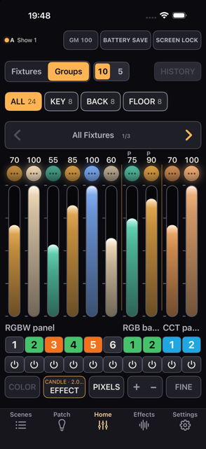
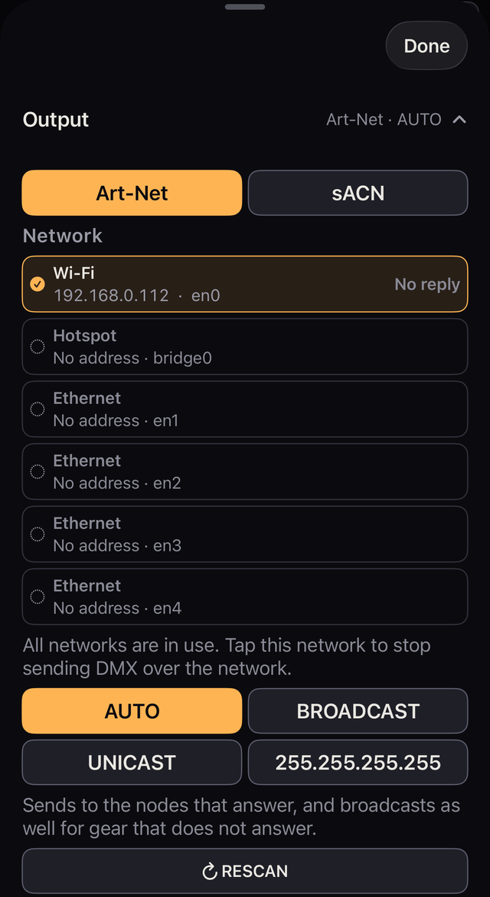
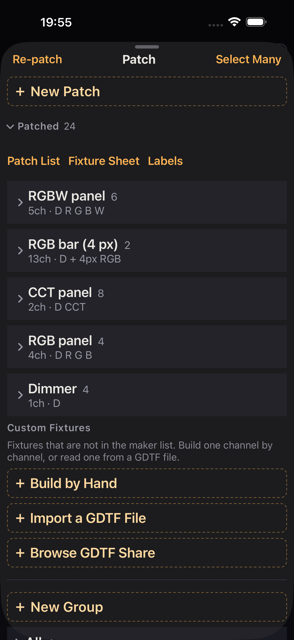
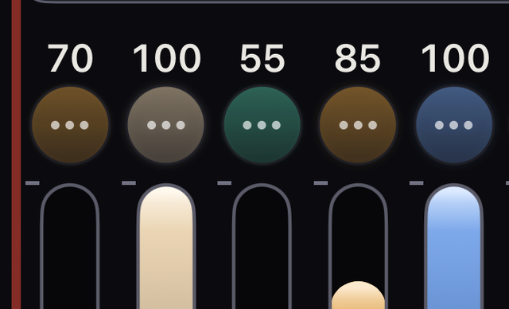
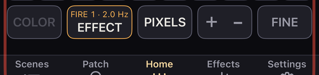
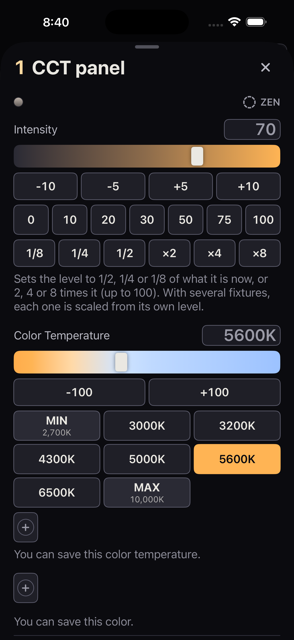
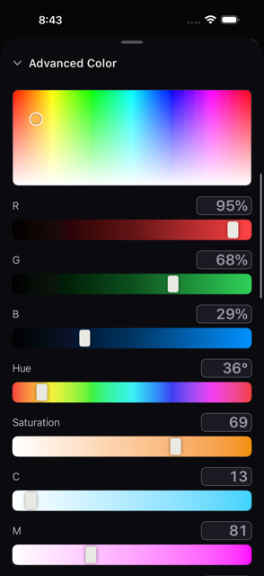
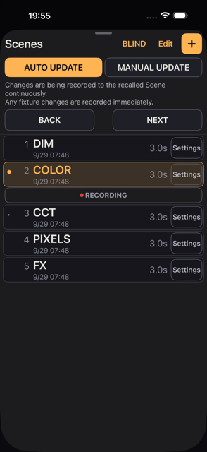

iPhone Lighting Console
คอนโซลไฟสำหรับงานภาพยนตร์และโทรทัศน์ สร้างขึ้นเพื่อ iPhone ควบคุมดวงไฟผ่าน Art-Net, sACN และ CRMX พร้อมสี Scene เอฟเฟกต์ และการตรวจสอบ อยู่ในกระเป๋าคุณ
เพิ่มเติม: Fixture / GDTF Output / Diagnostics MIDI Session
อัปเดตล่าสุด 2026-10-04 ・ ตรวจสอบบน 0.2 build 311
ยังไม่ต้องมีดวงไฟสักดวงก็ทำได้ถึงขั้นนี้ ชื่อปุ่มเขียนตรงตามที่ปรากฏบนหน้าจอทุกตัว
เมื่อเปิดแอป จะมีชุดซ้อมที่ลงทะเบียนดวงไฟไว้แล้ว 4 ดวงรออยู่ ใช้เวลาตรงนี้ 3 นาที ก็จะเห็นวิธีทำงานของ Kanau เกือบทั้งหมด
GM 100 ที่ด้านบนของหน้าจอ แล้วลากแกรนด์มาสเตอร์ลงในแผงที่เปิดขึ้นมา แถบบนสุดของหน้าจอและขอบหน้าจอจะเป็นสีแดง→100 เพื่อดึงกลับขึ้นมา แล้วปิดแผงเฟดเดอร์ขยับตาม ระยะทางที่นิ้วเลื่อนไป ไม่ใช่ตำแหน่งที่แตะลงไป จะเริ่มจากตรงไหนก็ไม่มีผลต่อผลลัพธ์
Intensity กำหนดความสว่าง Color Temperature กำหนดแสงขาว RGB กำหนดสีดวงไฟแต่ละดวงมีความสามารถต่างกัน รายการที่เห็นจึงเปลี่ยนไปตามดวงไฟด้วย
Scenes ที่ด้านล่างDIM, COLOR, CCT, PIXELS และ FX แตะเลือกสักอันหนึ่งตอนเริ่มต้นจะเป็น AUTO UPDATE สิ่งที่คุณแก้หลังจากเรียก Scene จึงถูกบันทึกกลับเข้าไปใน Scene นั้น ถ้าอยากให้คงไว้อย่างเดิม ให้สลับด้านบนสุดของ Scenes เป็น MANUAL UPDATE หรือล็อก Scene นั้นไว้ (บทที่ 08)
แม้ยังไม่ได้ต่อดวงไฟเลย Settings → DMX Monitor ก็แสดงตัวเลขที่ Kanau ส่งออกไปจริง ขยับเฟดเดอร์แล้วตัวเลขจะขยับตาม
ชุดสาธิตมีดวงไฟของ Generic อยู่ 4 ดวง ได้แก่ RGBW, BAR (4 พิกเซล), CCT และ RGB อย่างละหนึ่งดวง แบ่งเป็น 3 กลุ่ม ชื่อ KEY (RGBW และ BAR), BACK (CCT) และ FLOOR (RGB)
แกรนด์มาสเตอร์เริ่มที่ 100 มีดวงไฟ 2 ดวง (BAR และ RGB) ถูกทำเครื่องหมาย BATTERY SAVE ไว้และมีป้ายสีเขียว กลุ่ม FLOOR มีเอฟเฟกต์ไฟลุกทำงานอยู่ และมี Scene บันทึกไว้ 5 อัน ทั้งหมดนี้ไม่ได้อ้างว่าเป็นสินค้าจริงแต่อย่างใด
เมื่อเข้าใจชุดสาธิตแล้ว ให้เปลี่ยนมาใช้อุปกรณ์ของคุณเอง
Settings → Output ให้ตรวจว่า Nodes Answering เป็น 1 ขึ้นไป และ Network Output เป็นสีเขียว (บทที่ 02) อุปกรณ์ที่ไม่ตอบการโพลจะค้างอยู่ที่ 0 ทั้งที่รับสัญญาณตามปกติ กรณีนี้ให้ดูที่ตัวดวงไฟเองแทนPatch → ＋ New Patch → Add New Fixture จากนั้นกำหนดรุ่น โหมด DMX ยูนิเวิร์ส และแอดเดรส ให้ตรงกับการตั้งค่าของตัวดวงไฟเอง (บทที่ 03)Scenes เพื่อเก็บภาพแสงนั้น (บทที่ 08)ชุดซ้อมก็คือโชว์ธรรมดาชุดหนึ่ง เมื่อจะลงทะเบียนดวงไฟของคุณเองก็ลบมันทิ้งได้ หรือจะสร้างโชว์ใหม่ด้วย Settings → Shows → New Show ก็ได้
WAITING หรือ SHARED ทั้งสองอย่างอธิบายไว้ในบทที่ 02ดวงไฟที่เปิด Lock ไว้จะไม่ดับเมื่อคุณกดแบล็กเอาต์ และไม่ดับเมื่อคุณลากแกรนด์มาสเตอร์ลงจนสุด กรุณาตรวจว่าปลดล็อกหมดแล้วก่อนเริ่มถ่ายทำ จำนวนสิ่งที่ยังสว่างอยู่ขณะแบล็กเอาต์ แสดงอยู่ข้าง ๆ 🔒 สีเขียวที่ด้านบนของหน้าจอ
บนหน้าจอ Home มีอะไรอยู่บ้าง ไล่จากบนลงล่าง และจะอ่านมันอย่างไรเมื่อมีบางอย่างดูผิดปกติ

123456789ก่อนจะเข้าตารางละเอียด มีเพียงจุดเหล่านี้เท่านั้นที่คุณจำเป็นต้องรู้
| ตำแหน่ง | ทำหน้าที่อะไร |
|---|---|
| GM | ความสว่างโดยรวม อยู่ด้านบนของหน้าจอ |
| Fixtures / Groups | เลือกว่าจะให้ดวงไฟใดปรากฏ |
| Fader | กำหนดความสว่าง |
| Scenes | บันทึกภาพแสงและเรียกกลับมา |
| Patch | ลงทะเบียนดวงไฟ |
| Effects | แสดงรายการและหยุดเอฟเฟกต์ที่ทำงานอยู่ |
| Settings | เอาต์พุต โชว์ MIDI เซสชัน |
ทุกอย่างที่อยู่ถัดจากนี้ลงไปคือรายละเอียด
Home คือที่ที่คุณทำงาน การแตะแท็บอื่นจะเปิดแผงขึ้นมาทับไว้ ลากที่จับด้านบนลง หรือแตะ Done เพื่อกลับมาที่ Home
| แท็บ | ใช้ทำอะไร | ดูที่ |
|---|---|---|
| Scenes | บันทึกและเรียกภาพแสงกลับมา | บทที่ 08 |
| Patch | ดวงไฟ แอดเดรส โหมด และกลุ่ม | บทที่ 03 |
| Home | กำหนดความสว่างด้วยเฟดเดอร์ | บทที่ 04 |
| Effects | แสดงรายการ ปรับ และหยุดเอฟเฟกต์ | บทที่ 09 |
| Settings | เอาต์พุต DMX โชว์ MIDI เซสชัน และการตั้งค่า | บทที่ 02, 11–13 |
ด้านซ้ายคือเส้นทางและสถานะการเชื่อมต่อ เส้นทางใช้อักษรตัวเดียว Art-Net คือ A และ sACN คือ S จุดข้าง ๆ จะหายใจตลอดเวลาที่ DMX กำลังออกไป ส่วน Bluetooth มีจุดและชื่อของตัวเอง ถัดไปคือชื่อโชว์ที่กำลังเปิดอยู่ ถ้าเป็นเครื่องจอแคบที่แถวไม่เหลือที่ว่าง ชื่อจะไม่ขึ้น ขณะที่ BLIND เปิดอยู่ ด้านซ้ายทั้งหมดนี้จะกลายเป็น BLIND สีเหลืองอำพัน แตะที่มันเพื่อออกจาก BLIND (บทที่ 08)
| สิ่งที่แสดง | ความหมาย |
|---|---|
| จุดสีเขียว | กำลังส่ง |
| จุดสีเหลืองอำพัน | ช้าลง หรือกำลังเชื่อมต่อใหม่ (Reconnecting…) |
| จุดสีแดง ART-NET No node หรือ SACN No node | ไม่มีอะไรตอบกลับ แถบสถานะบอกชื่อเส้นทาง โดยจะย่อลงบนหน้าจอแคบ แตะที่มันเพื่อเปิด Settings → Output |
| จุดสีแดง ART-NET Blocked หรือ SACN Blocked | มีบางอย่างหยุดเอาต์พุตไว้ และจะไม่หายไปเอง แถบสถานะบอกชื่อเส้นทางและบอกว่า Blocked โดยจะย่อลงบนหน้าจอแคบ แตะที่มันเพื่อเปิด Settings → Output ซึ่งจะขึ้นสาเหตุกับวิธีแก้เป็นตัวแดง |
| จุดสีเทา Idle | หยุดอยู่ นี่ก็คือสิ่งที่คุณเห็นเมื่อปิดเครือข่ายทั้งหมด เช่นตอนใช้ Bluetooth อย่างเดียว |
| WAITING พร้อมหมายเลข IP | พบคอนโซลอีกเครื่อง เครื่องนี้จึงรอไว้ก่อน |
| SHARED พร้อมหมายเลข IP | มีคอนโซลอีกเครื่องส่งไปยังยูนิเวิร์สเดียวกัน เครื่องนี้ยังส่งอยู่ด้วย |
| JOINED พร้อมชื่อ | อยู่ในเซสชัน DMX ออกจากเครื่องโฮสต์ |
จุดสีเขียวไม่ได้พิสูจน์ว่าดวงไฟได้รับอะไรไปแล้ว บทที่ 02 อธิบายวิธีตรวจสอบ ส่วนบทที่ 14 อธิบายว่าต้องทำอย่างไรเมื่อผิดพลาด
ตรงกลางและด้านขวาของบรรทัดนี้มีสิ่งต่อไปนี้
| รายการ | แตะ | กดค้าง หรือข้อสังเกต |
|---|---|---|
| GM 100 | เปิดแผงแกรนด์มาสเตอร์ | กดค้างเพื่อเข้าการตั้งค่าของมัน เมื่อต่ำกว่า 100 จะเป็นสีแดงทึบและกะพริบ |
| B.O. | ยกเลิกแบล็กเอาต์ แต่ที่ GM 0 จะเปิดแผง GM แทน | ขณะที่คอนโซลมืดจะแสดงแทน GM และเมื่อแกรนด์มาสเตอร์อยู่ที่ 0 ก็เรียกตัวเองว่า B.O. เช่นกัน |
| U1 OFF (สีแดง) | ไม่เกิดอะไรขึ้น | บอกว่ายูนิเวิร์สไหนถูกปิด ด้วยหมายเลข สูงสุดสามตัว เกินกว่านั้นเป็น + เปิดกลับได้ที่ Settings → Output |
| 🔒 n (สีเขียว) | ไม่เกิดอะไรขึ้น | สิ่งที่ยังสว่างอยู่ขณะที่คอนโซลมืด ได้แก่ ดวงไฟที่ล็อกไว้ เฟดเดอร์ที่ตั้งเป็นสวิตช์ซึ่งอยู่ที่ ON และล็อกที่ค้างอยู่ที่แอดเดรสเก่า |
| BATTERY SAVE | เปิดและปิด | กดค้างเพื่อกำหนดปริมาณและเวลาเฟด ขณะที่เปิดอยู่ จะแสดงปริมาณปัจจุบันเป็นครั้งคราว เช่น −50% |
| SCREEN LOCK | ไม่ได้ล็อก | กดค้าง 0.5 วินาทีเพื่อล็อกหน้าจอ |
U1 OFF และ 🔒 จะขึ้นเฉพาะเมื่อมีเรื่องต้องแจ้ง คืออันแรกเมื่อปิดยูนิเวิร์สที่ลงทะเบียนดวงไฟไว้ ส่วน 🔒 ขณะที่คอนโซลประกาศว่ามืด คือแบล็กเอาต์ หรือแกรนด์มาสเตอร์อยู่ที่ 0 เมื่อเปิด Strap Lock ไว้ การห้อย iPhone กลับหัวก็จะล็อกหน้าจอด้วย ให้ลากไปทางขวาเพื่อปลดล็อก
| รายการ | วิธีใช้ |
|---|---|
| Fixtures / Groups | สลับระหว่างการแสดงตามรุ่นกับการแสดงตามกลุ่ม |
| 10 / 5 | จำนวนเฟดเดอร์ใน 1 หน้า แบบ 5 ตัวจะทำให้แต่ละตัวกว้างขึ้น |
| HISTORY | เปิดรายการสถานะก่อนหน้า |
| ปุ่มรุ่นและปุ่มกลุ่ม | แตะเพื่อแสดงดวงไฟเหล่านั้น กดค้างเพื่อกำหนดสีและความสว่างให้ทั้งหมดพร้อมกัน |
| CLEAR n | ล้างการเลือก ดวงไฟไม่เปลี่ยน |
| ‹ / › | ย้ายระหว่างหน้า |
| ตัวเลข | ความสว่างตั้งแต่ 0 ถึง 100 แสดงเป็นตัวใหญ่ด้านบนขณะที่คุณลาก |
| ไอคอนวงกลมของดวงไฟ (…) | แตะเพื่อเลือก กดค้าง เพื่อเปิดแผงของดวงไฟดวงนั้น |
| เฟดเดอร์ | ลากขึ้นลงเพื่อกำหนดความสว่าง |
| ชื่อรุ่น | ทำเครื่องหมายช่วงของดวงไฟที่เป็นรุ่นและโหมดเดียวกัน |
| ปุ่มหมายเลข | หมายเลขของดวงไฟ ในโหมดเปียโนจะเปลี่ยนความสว่างขณะกดค้างไว้ |
| ⏻ | ปิดและเปิดเอาต์พุตโดยคงค่าเดิมไว้ |
| COLOR | กำหนดสีและความสว่างให้ดวงไฟที่เลือกไว้ |
| EFFECT | ใส่เอฟเฟกต์ให้ดวงไฟที่เลือกไว้ |
| PIXELS | เปิดและปิดเซลล์ของดวงไฟแบบพิกเซล |
| ＋ − | วนโหมดเปียโน LOCK → ＋ → − |
| FINE | วนความละเอียด ปกติ → FINE (1/10) → FINE+ (1/100) |
COLOR ใช้ไม่ได้เมื่อไม่ได้เลือกอะไรไว้ และใช้ไม่ได้กับดวงไฟที่ไม่มีสี EFFECT ต้องมีการเลือกไว้ก่อน ส่วน PIXELS ต้องมีดวงไฟแบบพิกเซลอยู่ในหน้านั้น
| สีหรือเครื่องหมาย | ความหมาย |
|---|---|
| เหลืองอำพัน | ถูกเลือกอยู่ หรือกำลังทำงาน |
| แดง | แบล็กเอาต์ แกรนด์มาสเตอร์ต่ำ ปัญหาเครือข่าย โหมดเปียโน สิ่งที่ต้องตรวจสอบ |
| เขียว | กำลังส่ง Fixture Lock BATTERY SAVE เปิดอยู่ |
| แถบด้านบนและขอบสีเหลืองอำพัน | BLIND เปิดอยู่ สิ่งที่คุณทำจะไม่ไปถึงดวงไฟ |
| ม่วง | เอาต์พุตถูกปิด หรือหน้าจอถูกล็อก |
| ฟ้าคราม | กำลังถูกอีกเครื่องหนึ่งในเซสชันควบคุมอยู่ |
| ส้ม | อยู่ที่ลิมิตที่คุณตั้งไว้ |
| เทา | ใช้ไม่ได้ หรือหยุดอยู่ |
ไอคอนวงกลมแสดงสีของดวงไฟและเอาต์พุตจริงของมัน ในดวงไฟที่มีพิกเซล มันจะอ่านเซลล์ด้วย ดังนั้นดวงที่อยู่ที่ 100 แต่เซลล์ลงหมดแล้วก็จะแสดงเป็นมืด ดวงที่ถูกเลือกจะมีขอบสีเหลืองอำพัน ดวงที่ปิดเอาต์พุตจะมีวงแหวนสีม่วงและ ⏻ ส่วนดวงที่ล็อกไว้จะมีวงแหวนรอบนอกสีเขียวและ 🔒 สีที่ไม่ให้แสง เช่น RGB เป็น 0 ทั้งหมด จะทำให้ไอคอนวงกลมแสดงเป็นดับ แม้ความสว่างจะสูงกว่า 0 เอฟเฟกต์ที่ทำงานอยู่จะทำให้มันขยับ
ขอบสีแดงจะวิ่งรอบจอเมื่อแกรนด์มาสเตอร์ต่ำกว่า 100 หรือระหว่างแบล็กเอาต์ ขอบจะเต้นเป็นจังหวะ และมีแสงวิ่งรอบขอบนั้น เมื่ออยู่ที่ 0 หรือในแบล็กเอาต์ ขอบจะหนาขึ้นและเข้มขึ้น และแสงจะวิ่งเร็วขึ้น จึงแยกสองสภาพได้โดยไม่ต้องอ่าน ขอบสีเขียวที่มีแสงยาว ๆ เลื่อนช้า ๆ ไปรอบขอบ หมายถึง BATTERY SAVE เปิดอยู่ เมื่อมีทั้งสองอย่าง ขอบจะผลัดกันเปลี่ยนสี สีแดงประมาณหกวินาที สีเขียวประมาณสองวินาที ส่วน BLIND จะดูต่างออกไป แถบบนสุดของหน้าจอตรงที่มีนาฬิกากับขอบจะกลายเป็นกรอบสีเหลืองอำพันกรอบเดียว ถ้าแกรนด์มาสเตอร์ลดลงระหว่าง BLIND ขอบสีแดงจะเต้นเป็นจังหวะอยู่บนกรอบสีเหลืองอำพัน ระหว่าง BLIND จะไม่แสดงสีเขียว ขอบบอกว่าเอาต์พุตถูกกดไว้ ส่วนป้ายในแถบสถานะจะบอกว่าถูกกดด้วยอะไร
↑ สารบัญการตั้งค่าเส้นทางไปยังอุปกรณ์ไฟของคุณ และการตรวจสอบว่าข้อมูลไปถึงจริง

12345Kanau ส่งทุกยูนิเวิร์สที่ลงทะเบียนไว้อย่างต่อเนื่อง ตามปกติที่ 44 Hz ไม่มีปุ่มสั่งเริ่ม การส่งอาจหยุดชั่วคราวหรือหยุดไปเลยเมื่อตรวจพบคอนโซลอีกเครื่อง เมื่อการตั้งค่าเครือข่ายเปลี่ยน หรือเมื่อ iOS ไม่อนุญาต
Art-Net และ sACN ใช้ร่วมกันไม่ได้ ให้เลือกอย่างใดอย่างหนึ่ง ส่วน CRMX ผ่าน Bluetooth ทำงานคู่ขนานไปกับทั้งสองอย่างได้
Network แสดงรายการการเชื่อมต่อ Wi-Fi, Ethernet และ Hotspot พร้อมแอดเดรสของแต่ละเส้น และจำนวนโหนดที่ตอบกลับบนเส้นนั้น
ถ้าคุณใช้สายและ Wi-Fi ควบคู่กัน ให้ตรวจว่าทั้งสองเส้นปรากฏอยู่ในรายการ
| การตั้งค่า | ส่งไปที่ไหน | ใช้เมื่อใด |
|---|---|---|
| AUTO (Art-Net) | ยูนิแคสต์แต่ละยูนิเวิร์สไปยังโหนดที่ระบุยูนิเวิร์สนั้นไว้ในคำตอบ โหนดที่ไม่ได้ระบุเลยจะได้รับทั้งหมด บวกกับบรอดแคสต์วินาทีละครั้งในแต่ละเครือข่าย ถ้าไม่มีใครตอบกลับเลยจะบรอดแคสต์อย่างเดียว | ทางเลือกปกติ |
| BROADCAST (Art-Net) | ส่งทุกเฟรมไปยังซับเน็ตของแต่ละเครือข่าย | เมื่อโหนดรายงานแอดเดรสผิด และ AUTO อัปเดตช้า |
| UNICAST | ส่งตรงไปยังแอดเดรสที่คุณกรอก | เมื่อบรอดแคสต์ไปไม่ถึง หรือคุณต้องการระบุปลายทางเอง |
| 255.255.255.255 (Art-Net) | บรอดแคสต์ภายในเซกเมนต์ ไม่ข้ามเราเตอร์ | เมื่อการกำหนดแอดเดรสไม่ตรงกันและบรอดแคสต์ธรรมดาไม่ได้ผล iOS อาจปิดกั้นได้ |
| MULTICAST (sACN) | แอดเดรสมัลติแคสต์ของแต่ละยูนิเวิร์ส | ค่าเริ่มต้นของ sACN |
เมื่อใช้ UNICAST ให้พิมพ์แอดเดรสของโหนดแล้วแตะ Add ถ้าไม่ได้กรอกอะไรเลยจะขึ้นว่า No node IPs entered. และจะไม่มีอะไรถูกส่งออกไป ทุกยูนิเวิร์สจะถูกส่งไปยังทุกแอดเดรสที่คุณกรอกไว้
ถ้า Nodes Answering เป็น 1 ขึ้นไปในโหมด AUTO แต่ดวงไฟอัปเดตประมาณวินาทีละครั้ง ให้ตรวจว่าโหนดรายงานแอดเดรสของตัวเองผิดหรือไม่ ดูที่ Destination แล้วลองเปลี่ยนเป็น BROADCAST บทที่ 14 อธิบายสาเหตุอื่น ๆ ของอาการหน่วง
การแตะ RESCAN ใต้ Art-Net จะรีเฟรชรายการโหนด ใช้หลังจากเพิ่มอุปกรณ์ ถอดอุปกรณ์ หรือเปลี่ยนแอดเดรส ถ้าปล่อยไว้เฉย ๆ โหนดใหม่จะปรากฏภายในราว 3 วินาที และโหนดที่ถอดออกจะหายไปหลังจากราว 10
การส่งยังดำเนินต่อไปขณะกำลังค้นหา RESCAN ใช้ไม่ได้เมื่อไม่มีเครือข่ายที่ใช้งานได้
บรรทัดสีแดงใน Settings → Output จะบอกว่าอะไรหยุดเอาต์พุตไว้และต้องทำอะไร เช่น เปิดสิทธิ์เครือข่ายภายใน สลับไป UNICAST แล้วใส่ที่อยู่ของโหนด ตรวจที่อยู่ที่พิมพ์ไว้ ตรวจ Wi-Fi หรือจ่ายไฟให้โหนด ส่วน CRMX ก็มีบรรทัดของตัวเอง คำพูดของตัวคอนโซลเองจะอยู่ในวงเล็บท้ายบรรทัด จึงคัดลอกไปได้ตรง ๆ
Universes แสดงแต่ละยูนิเวิร์สที่ลงทะเบียนไว้ พร้อมจำนวนดวงไฟ จำนวนที่สว่างอยู่ และสวิตช์ ON/OFF
OFF ไม่ได้ หยุดการส่ง มันยังส่งค่าศูนย์ไปยังยูนิเวิร์สนั้นต่อไป เพื่อไม่ให้ตัวรับค้างอยู่ที่ค่าสุดท้ายและสว่างอยู่อย่างนั้น ยูนิเวิร์สที่ไม่มีดวงไฟอยู่เลยจะไม่ถูกนับ ปิดอันนั้นจึงไม่มีอะไรขึ้น ยูนิเวิร์สที่ถูกปิดจะถูกระบุไว้ด้านบนของหน้าจอ ในรูป U1 OFF
ถ้าโหนดของคุณต้องการ Net / Sub-Net / Universe แทนที่จะเป็นตัวเลขเดียว ให้เปิด Settings → Settings → Art-Net → Net / Sub / Uni ความสัมพันธ์คือ Net × 256 + Sub × 16 + Uni
ลำดับความสำคัญของ sACN ตั้งได้เป็น 0, 100 หรือ 200 ค่าเริ่มต้นคือ 100 และเป็นลำดับความสำคัญที่ Kanau ส่งไปพร้อมกับเอาต์พุต sACN ของมัน
ตัวส่งที่คุณเลือกจะรับยูนิเวิร์สที่แพตช์ของคุณใช้ (U1 เมื่อแพตช์อยู่ในยูนิเวิร์ส 1) เมื่อแพตช์คร่อมหลายยูนิเวิร์ส ให้เลือกว่ามันรับยูนิเวิร์สใดด้วย − และ + ที่แถว Universe ใต้ตัวส่ง เมื่อคุณเลือกเองแล้ว Kanau จะเลิกเลือกให้จนกว่าคุณจะตัดการเชื่อมต่อตัวส่งแล้วเลือกใหม่ ครั้งต่อไป เมื่อเปิด Bluetooth ระบบจะเชื่อมต่อกลับไปยังตัวเดิม เมื่อตัวที่เลือกไว้เชื่อมต่อครบแล้วการค้นหาจะหยุด ถ้าจะหาตัวส่งเพิ่มให้กด RESCAN ในรายการ ตัวที่ลิงก์แล้วจะขึ้นว่า connected ส่วนตัวที่กำลังมีค่าส่งไปจะขึ้นว่า sending เมื่อตัวส่งเชื่อมต่อไม่ได้หรือหลุดไป Settings → Output จะบอกว่าต้องตรวจอะไร โดยมีข้อความของระบบเองอยู่ในวงเล็บ
ถ้ายูนิเวิร์สเดียวกันออกไปทั้งทางเครือข่ายและทาง Bluetooth Settings → Output จะบอกไว้ว่า U1: network and Bluetooth output are both on. นี่คือการบอกข้อเท็จจริง ไม่ใช่คำเตือน ตัวรับ CRMX จะรับเอาต์พุตของตัวส่งที่มันลิงก์อยู่ ดังนั้นการเลือก U1 เดียวกันใน Kanau ไม่ได้แปลว่าดวงไฟดวงเดียวจะได้รับสองทาง ไฟจะกะพริบเฉพาะตรงที่ดวงไฟรับจากทั้งสองทางจริง ๆ ตรงนั้นให้ปิดทางใดทางหนึ่ง
ถ้าตัวส่งยังไม่ยอมรับ Art-Net หลังจากคุณปิด Bluetooth แล้ว ให้ตรวจการตั้งค่าของตัวส่งเอง
| สิ่งที่แสดง | หมายความว่าอย่างไร และต้องทำอะไร |
|---|---|
| WAITING + IP | มีคอนโซลอีกเครื่องส่งอยู่ก่อนแล้วตอนที่เครื่องนี้เริ่ม เครื่องนี้จึงรอไว้ก่อน ให้หยุดอีกเครื่อง หรือแตะข้อความนั้นแล้วเลือก Send anyway? → Send ถ้าอีกเครื่องเป็นโฮสต์ Kanau คุณจะเข้าร่วมเซสชันของมันแทนก็ได้ |
| SHARED + IP | มีคอนโซลอีกเครื่องปรากฏขึ้นหลังจากเครื่องนี้เริ่มแล้ว การส่งยังดำเนินต่อไป ถ้าจำเป็นก็ให้หยุดเครื่องใดเครื่องหนึ่ง |
ถ้าอุปกรณ์ 2 เครื่องเริ่มพร้อมกันและต่างก็รอกันอยู่ เครื่องที่มีแอดเดรสต่ำกว่าจะกลับมาส่งก่อน
ครึ่งล่างของ Output มีไว้เพื่อบอกคุณว่าสิ่งต่าง ๆ หยุดอยู่ตรงไหน ไม่ใช่ชุดการตั้งค่า เมื่อเอาต์พุตช้าหรือหายไป ให้อ่านไล่จากบนลงล่าง (บทที่ 14)
| รายการ | อ่านอย่างไร |
|---|---|
| Destination | ปลายทางจริงที่ส่งไป เครื่องหมาย ↦ หลังแอดเดรสหมายถึงยูนิแคสต์ไปยังโหนดที่ตอบกลับ |
| Medium | การเชื่อมต่อที่ใช้อยู่ เช่น Wi-Fi + Ethernet |
| Network Output | จำนวนแพ็กเก็ตที่ส่งผ่านเครือข่ายใน 1 วินาทีที่ผ่านมา ราว ๆ 44 ถือว่าปกติ ถ้าขึ้นว่า Nothing แปลว่าไม่มีอะไรออกไปเลย ช่องนี้ไม่นับ Bluetooth |
| Clock | ช่วงห่างที่แย่ที่สุดระหว่างการส่ง ประมาณ 23 ms ถือว่าปกติ เกิน 100 ms ชี้ไปที่ตัวโทรศัพท์ |
| Touch → Wire | จากนิ้วของคุณจนถึงแพ็กเก็ต ประมาณ 25 ms ถือว่าปกติ |
| Nodes Answering | จำนวนที่ตอบกลับ พร้อมชื่อ แอดเดรส การเชื่อมต่อ และเวลาไป-กลับ ตัวเลขในวงเล็บคือค่าที่แย่ที่สุดของ 10 วินาทีที่ผ่านมา ในโหมด AUTO บรรทัดใต้แต่ละโหนดจะบอกยูนิเวิร์สที่ส่งไปยังโหนดนั้น เช่น U1 หรือ U0–U3 |
| Type these into the node | ค่า Net / Sub / Uni ที่ต้องกรอกลงในโหนด เมื่อเปิดการแสดงผลแบบนั้นไว้ |
สิ่งเหล่านี้ช่วยจำกัดขอบเขตของปัญหา แต่ไม่ได้พิสูจน์ว่าสำเร็จ ค่าเหล่านี้คือสิ่งที่ Kanau ส่งออกไป ส่วนดวงไฟได้รับหรือไม่นั้น ดูจากตรงนี้ไม่ได้ Network Output อาจเป็นสีเขียวอยู่ ขณะที่การตั้งค่าไม่ตรงกันหรือความผิดพลาดที่ปลายทางทำให้ดวงไฟยังมืดอยู่ อุปกรณ์ที่ไม่ตอบการสำรวจจะขึ้นเป็น 0 ใต้ Nodes Answering แม้ว่ามันกำลังรับข้อมูลอยู่ก็ตาม
Settings → DMX Monitor แสดงแชนเนลทั้ง 512 ช่องของแต่ละยูนิเวิร์สตามที่กำลังส่งออกไป มันรีเฟรช 10 ครั้งต่อวินาที การดูมันไม่กระทบการส่ง
ช่องต่าง ๆ แสดงค่าเท่านั้น พิมพ์อะไรในนี้ไม่ได้ ล็อกที่ดวงไฟของมันถูกลบไปแล้วจะแสดงอยู่เหนือตาราง พร้อม UNLOCK
ค่าอ่านได้ทั้งแบบเปอร์เซ็นต์และแบบ DMX ดิบ โดยตามการตั้งค่าเดียวกับส่วนอื่นของคอนโซล แต่ละยูนิเวิร์สพับเก็บได้ทีละอัน หัวข้อที่พับไว้ยังคงบอกจำนวนแชนเนลที่ยังทำงานอยู่ จึงรู้ได้ว่าอันไหนกำลังทำงานโดยไม่ต้องเปิด
↑ สารบัญลงทะเบียนดวงไฟที่คุณใช้งาน แล้วกำหนดรุ่น โหมด DMX ยูนิเวิร์ส แอดเดรส หมายเลข และกลุ่ม
ความสว่างและสีกำหนดที่ Home (บทที่ 04 และ 05)

| ช่อง | คืออะไร |
|---|---|
| Favorites | มี ★ อยู่ข้างแต่ละโหมด ข้างช่อง Mode และข้างผู้ผลิตแต่ละราย แตะเพื่อเพิ่มหรือเอาออก โหมดที่ติดดาวจะแสดงเป็นปุ่มใต้ Favorites ผู้ผลิตที่ติดดาวจะขึ้นไปอยู่บนสุดของรายการ และ Edit ข้าง Favorites จะแสดงรายการทั้งหมด |
| Name | ชื่อของดวงนี้เอง ปรากฏใน Patch และ Patch List ส่วน Home จะแสดง Label แทน ค่าเริ่มต้นคือชื่อรุ่น |
| Number / How Many | หมายเลขที่คุณใช้เรียกมันหน้างาน และจำนวนที่จะเพิ่ม ได้สูงสุด 4,096 หมายเลขเว้นว่างได้ และเริ่มจากเลขสูงสุดที่ใช้อยู่บวก 1 |
| Label | ชื่อที่แสดงและใช้ร่วมกันทุกดวงในรุ่นนั้นที่อยู่ในโหมดเดียวกัน จะอยู่ใต้เฟดเดอร์ ค่าเริ่มต้นคือชื่อรุ่นอย่างเป็นทางการ ถ้าเปลี่ยน Mode ตรงนี้ Label ที่คุณยังไม่ได้พิมพ์จะตามโหมดใหม่ พิมพ์ที่แผงของดวงไฟได้ด้วย (บทที่ 06) |
| Universe / Address | ค่าเริ่มต้นคือ U1 / 1 การเปลี่ยนยูนิเวิร์สจะรีเซ็ตแอดเดรสกลับเป็น 1 ใช้ U0 ได้ |
| Offset | ระยะห่างระหว่างดวงไฟ เติมให้อัตโนมัติจากจำนวนแชนเนลของโหมดนั้น |
| Gap | แชนเนลที่เว้นเพิ่มระหว่างดวงไฟ |
| BATTERY SAVE | ทำเครื่องหมายดวงไฟใหม่เหล่านี้ไว้สำหรับ BATTERY SAVE |
| Label Color | สีพื้นหลังของหมายเลข มี 7 สี หรือไม่ใช้สีเลย |
| Map | ผังแชนเนลทั้ง 512 ช่อง ลากแล้วปล่อยเพื่อกำหนดแอดเดรสเริ่มต้น |
ดวงไฟแต่ละดวงหลังดวงแรกจะเริ่มที่แอดเดรสเริ่มต้นของดวงก่อนหน้า บวกด้วย Offset และ Gap แต่จะไม่ชิดกันเกินจำนวนแชนเนลของโหมด แอดเดรสจึงไม่ทับกัน ส่วนที่เกินช่องที่ 512 จะไหลไปยังยูนิเวิร์สถัดไป ถ้า Offset เล็กกว่าจำนวนแชนเนลของโหมดจะมีคำเตือนขึ้น แต่คุณยังทำต่อได้
หลังจากนั้นจะมีแผงขึ้นมาไล่รายการที่เพิ่งเข้าไป ดวงละ 1 บรรทัด พร้อมหมายเลข ชื่อ และแอดเดรส ใต้บรรทัดทำนองว่า Added 3 × Titan Tube — U1 1–15 แผงนี้จะอยู่จนกว่าคุณจะแตะ OK จึงแพตช์ต่อแล้วค่อยอ่านทีหลังได้ ส่วน Already Patched ใช้เพิ่มดวงไฟรุ่นที่คุณมีอยู่แล้ว และ Patched Now แสดงผังปัจจุบัน
| หมายเลข | คืออะไร |
|---|---|
| Unit No. | หมายเลขไล่เรียงภายในรุ่นเดียวกัน ระบบกำหนดให้เอง |
| Fixture Number | หมายเลขที่คุณใช้หน้างาน คุณเป็นคนกำหนดเอง |
จะให้ Home แสดงแบบไหน กำหนดที่ Settings → Settings → Fixture Numbers → Show the Fixture Number ค่าเริ่มต้นคือ Unit No. หมายเลขดวงไฟที่ซ้ำกันจะมีคำเตือนขึ้น แต่ใช้ได้
เวอร์ชันนี้มาพร้อม ผู้ผลิต 46 ราย ดวงไฟ 680 รุ่น และ 13,151 โหมด สำหรับสิ่งที่ไม่มีในคลัง ให้ใช้นิยามของ Generic หรือ Custom Fixtures
Generic ประกอบด้วย Dimmer, Dimmer 16-bit, Bi-color, CCT, RGB, RGBW, Dimmer + RGB และ Dimmer + RGBW ส่วน Bulb และ Desk lamp อยู่ในรายการภายใต้ผู้ผลิต Tungsten
Patched แสดงรายการดวงไฟตามรุ่นและโหมด แตะหัวข้อเพื่อพับเก็บ แตะแถวของดวงไฟเพื่อเปิดการตั้งค่าการลงทะเบียนของดวงนั้น
Patch List ใต้หัวข้อ Patched แสดงดวงไฟทุกดวงที่ลงทะเบียนแล้วเรียงตามแอดเดรส แยกทีละยูนิเวิร์ส แต่ละแถวแสดงยูนิเวิร์สและแอดเดรสเริ่มต้นเป็นตัวใหญ่ โดยมีแอดเดรสสุดท้ายอยู่ข้างใต้ ตามด้วยหมายเลขของดวงไฟ แล้วจึงเป็นชื่อและโหมดของมัน โหมดจะไม่ถูกตัดให้สั้นลง มีไว้อ่านขณะที่คุณตั้งแอดเดรสบนตัวดวงไฟเอง ในนี้แก้อะไรไม่ได้เลย แอดเดรสเริ่มต้นที่ทับซ้อนกันจะเป็นสีแดงและมีเครื่องหมาย ⚠ ปุ่ม Export PDF ที่มุมขวาบนจะสร้างสำเนาขนาด A4 ไว้แจก โดยมีชื่อโชว์และวันที่อยู่ทุกหน้า
Fixture Sheet ใน Settings ซึ่งอยู่ใต้ DMX Monitor ทันที แสดงว่าดวงไฟทุกดวงเป็นอย่างไรอยู่ในตอนนี้ เรียงตามลำดับของ All ใน Home ได้แก่ หมายเลขและชื่อ แอดเดรส ความสว่าง สี เอฟเฟกต์ที่กำลังทำงาน และเครื่องหมายอย่าง LOCK และ OFF ในนี้แก้อะไรไม่ได้ และ Export PDF จะสร้างสำเนาให้
Labels ใน Settings ซึ่งอยู่ใต้ Fixture Sheet สร้างสติกเกอร์สำหรับติดดวงไฟเป็น PDF ขนาด A4 เรียงตามแอดเดรส Standard มีขนาด 52.5 × 37.125 mm แผ่นละ 32 ชิ้น ส่วน Small มีขนาด 26.25 × 14.85 mm แผ่นละ 160 ชิ้น Copies กำหนด 1 ถึง 4 ชิ้นต่อดวงไฟ แต่ละป้ายมีหมายเลขของดวงไฟ Label แอดเดรสเริ่มต้น และโหมด Export PDF จะบันทึกไฟล์ไว้
⚠ หมายถึงแอดเดรสทับซ้อนกัน หรือช่วงแอดเดรสเลยช่องที่ 512 และยังใช้กับดวงไฟที่เอาต์พุตถูกตรึงไว้ที่ค่าอื่นด้วยล็อก ให้เปิดดวงไฟนั้นเพื่อดู การส่งยังดำเนินต่อไปขณะที่เครื่องหมายนี้แสดงอยู่ ดังนั้นกรุณาตรวจการตั้งค่า ส่วน n fixture data problems หมายถึงความผิดพลาดที่พบขณะโหลดข้อมูลดวงไฟ แตะเพื่อดูรายละเอียด
การทำงานในรายการนี้ไม่เปลี่ยนว่า Home กำลังแสดงดวงไฟใดอยู่
แตะ Select Many แล้วเลือกดวงไฟ เครื่องหมาย ✓ บนแถวของรุ่นจะเลือกทั้งรุ่นนั้น
| การกระทำ | ทำอะไร |
|---|---|
| Select All / Select None | เลือกหรือล้างทั้งหมด รวมถึงแถวที่พับเก็บไว้ |
| Name | ใส่หมายเลขต่อท้ายชื่อตามลำดับที่คุณเลือก |
| Number | กำหนดหมายเลขดวงไฟตามลำดับที่คุณเลือก |
| Address | จัดวางแอดเดรสใหม่จากยูนิเวิร์ส แอดเดรสเริ่มต้น และระยะเว้น |
| Battery | ทำเครื่องหมายหรือยกเลิกเครื่องหมายสำหรับ BATTERY SAVE |
| New group | สร้างกลุ่มจากสิ่งที่เลือกไว้ |
| Delete | ลบออก กรุณาตรวจจำนวนก่อนยืนยัน |
การลบดวงไฟจะลบความสว่าง สี และลิมิตของมันไปด้วย และเอามันออกจากทุก Scene ซึ่ง HISTORY ย้อนกลับได้ ส่วนการลบจากภายในกลุ่มจะเอาออกจากกลุ่มนั้นเท่านั้น ตัวดวงไฟยังอยู่ ถ้าการเอาออกทำให้กลุ่มว่างลง กลุ่มจะถูกลบไปด้วย และหน้ายืนยันก็จะบอกไว้
ระบบเสนอเฉพาะช่วงที่ใหญ่พอเท่านั้น ดวงไฟที่แอดเดรสทับซ้อนกันจะแสดงเป็นสีแดง
Close Gaps ที่มุมขวาบนของ Re-patch จะจัดดวงไฟของยูนิเวิร์สหนึ่งให้ชิดกันตั้งแต่แอดเดรส 1 เรียงตามแอดเดรส ช่องว่างที่คุณเว้นไว้โดยตั้งใจก็ถูกปิดชิดเข้าด้วย มันจะแสดงเฉพาะดวงไฟที่ขยับ พร้อม Before และ After และจะไม่มีอะไรเปลี่ยนจนกว่าคุณจะแตะ Apply แอดเดรส DMX ที่ตัวดวงไฟเองจะไม่เปลี่ยน ให้ตั้งแต่ละดวงเป็นค่า After ของมัน แอดเดรสที่ล็อกไว้จะคงค่าเดิม การจัดชิดทั้งหมดนับเป็นหนึ่งขั้นใน HISTORY
ดวงไฟ 1 ดวงอยู่ได้หลายกลุ่ม มันไม่ได้ถูกคัดลอก การแก้จากกลุ่มใดก็ตามคือการแก้ดวงเดียวกันนั้น การเพิ่มเข้ากลุ่มก็ยังคงเหลือมันไว้ใน All ด้วย
การแตะชื่อกลุ่มทำให้คุณตั้งชื่อ ดูจำนวน ช่วงแอดเดรสและผัง จัดลำดับใหม่ หรือลบกลุ่มนั้นได้ Edit Group — Add & Reorder ใช้เพิ่มและจัดเรียงดวงไฟ ส่วน Add to an Existing Group ใช้ใส่สิ่งที่เลือกไว้ตอนนี้ลงในกลุ่มที่มีอยู่แล้ว
จะให้ Patch แสดงแถว All หรือไม่ กำหนดที่ Settings → Settings → Groups → Show the All Row
Custom Fixtures เก็บนิยามที่คุณเพิ่มเอง โดยอยู่ในแท็บ Patch ใต้ ＋ New Patch และรายการรุ่น นิยามเหล่านี้ใช้ได้กับทุกโชว์ การลบนิยามหนึ่งไม่กระทบดวงไฟที่ลงทะเบียนจากนิยามนั้นไปแล้ว
SAVE & PATCH จะเปิดหน้าจอลงทะเบียนโดยเลือกนิยามนั้นไว้ให้แล้ว Remember on This Device เก็บการลงชื่อเข้าใช้ของคุณไว้ ส่วน FORGET ลบทิ้ง นิยามที่ดึงมาแล้วยังอยู่ ข้อมูลการลงชื่อเข้าใช้ของคุณส่งไปยัง GDTF Share
＋ Import a GDTF File → ＋ Open a GDTF File เลือกไฟล์ .gdtf ตรวจโหมดและรายงานการนำเข้า แล้วบันทึก ไม่ต้องใช้เครือข่าย
รายงานจะระบุสิ่งที่ถ่ายทอดมาไม่ได้ ค่าแบบ 16-bit ที่ถูกแยกไปอยู่คนละแอดเดรสห่างกันจะเก็บไว้เฉพาะไบต์หยาบ แอดเดรสที่ไม่ได้ใช้จะถูกเก็บไว้เป็นช่องว่าง และแชนเนลที่อยู่บน DMX break อื่นจะถูกตัดทิ้ง เมื่อแอดเดรสทับซ้อนกัน แชนเนลที่มาก่อนจะชนะ ฟังก์ชันที่ไม่รู้จักจะคงชื่อเดิมไว้
นิยามที่ขึ้นว่า Imported data is not verified. ควรนำไปตรวจกับดวงไฟจริง แก้บทบาทที่ผิดได้ด้วย SAVE & EDIT การแก้นี้จะมีผลกับดวงไฟที่คุณลงทะเบียนจากนิยามนั้นในภายหลัง ส่วน This mode has no channels. หมายความว่าคุณควรเลือกโหมดอื่น
เปิด ＋ Build by Hand แล้วเริ่มจากนิยามเปล่า หรือจากแม่แบบ: Dimmer, CCT, Bi-color, RGB, HSI, x y, CCT + HSI, Dimmer + RGBW, Full Color, Full Color + White, Multi-emitter ตัวเลือกที่สองคือ Copy an Existing Fixture จะเริ่มจากดวงไฟในคลังแทน (ด้านล่าง)
ตั้งป้ายชื่อให้แต่ละแชนเนล แล้วกำหนดบทบาท ขนาด 8 หรือ 16 bit ค่าเริ่มต้น และหน่วยจริงตามที่จำเป็น หมายเลขแชนเนลและจำนวนรวมระบบคำนวณให้เอง ถ้าไม่รู้บทบาทของช่องใดก็เว้นไว้ได้ และคุณยังขับมันจาก Channels ได้อยู่ Save จะถูกปฏิเสธขณะที่ยังมี ERROR
เปิด ＋ Build by Hand → Copy an Existing Fixture แล้วเลือก Manufacturer, Fixture และ Mode สำเนาจะมีชื่อว่า "… (Modified)" และอยู่ใต้ MODIFIED ในรายการ Manufacturer Duplicate and Edit ให้คุณเปลี่ยนชื่อ ช่วงอุณหภูมิสี บทบาทและชื่อของแชนเนล ป้ายชื่อ และค่าเริ่มต้น ส่วนจำนวนแชนเนล ผังแบบ 16-bit ช่วงค่า และโครงสร้างสวิตช์ เปลี่ยนไม่ได้
↑ สารบัญเฟดเดอร์บนหน้าจอ Home นี่คือหัวใจของ Kanau
เฟดเดอร์ตอบสนองต่อ ระยะทางที่นิ้วของคุณเลื่อนไป ไม่ใช่ตำแหน่งที่คุณแตะลงไป คุณขับมันได้จากตัวเลข จากไอคอนวงกลม หรือจากพื้นที่ว่างใต้เฟดเดอร์ มันถูกสร้างมาเพื่อให้คุณทำงานโดยมองเวทีแทนที่จะมองมือตัวเอง

หัวจับจะโตขึ้นเล็กน้อยเมื่อคุณแตะโดน และ ไม่มีอะไรขยับจนกว่าคุณจะลากไปได้ระยะหนึ่ง การวางนิ้วพักไว้บนมันจึงปลอดภัย แสงที่ทอดไปตามเฟดเดอร์จะดับเมื่อตัวเลขเหนือมันอ่านได้ 0 เฟดเดอร์ที่ 0 จึงไม่เคยดูเหมือนอยู่ที่ 1 ขณะที่คุณลาก หมายเลข ชื่อที่แสดงใต้เฟดเดอร์ และค่าจะปรากฏเป็นตัวใหญ่ที่ด้านบนของหน้าจอ ถ้าคุณตั้งลิมิตไว้ มันจะขยับอยู่ภายในลิมิตนั้น บนดวงไฟที่มีสี ตัวเลขที่ขึ้นจะแสดงสีนั้นเป็นแถบ อุณหภูมิสีเป็นเคลวิน ตัวอักษร G หรือ M พร้อมตัวเลขเมื่อโทนเขียว / มาเจนตาไม่ได้อยู่ตรงกลาง และชื่อเจลที่คุณเลือกจากตาราง ตราบเท่าที่สียังเป็นสีที่คุณตั้งไว้ สีที่บังเอิญตรงกับเจลจะไม่ถูกเรียกชื่อ ส่วนสีขาวจะเรียกชื่อจากค่าเคลวิน ดิมเมอร์ธรรมดาจะไม่แสดงสิ่งเหล่านี้ และ GM ไม่แสดงสี เพราะไม่ได้ชี้ไปที่ดวงไฟดวงใดดวงหนึ่ง
| การกระทำ | เกิดอะไรขึ้น |
|---|---|
| แตะสั้น | วน ปกติ → FINE (1/10) → FINE+ (1/100) → ปกติ |
| กดค้าง | เปลี่ยนเป็นระดับถัดไปเฉพาะตอนกดค้าง เมื่อปล่อยจะกลับเป็นปกติ |
การสลับกลางคันขณะลากไม่ทำให้ค่ากระโดด FINE ใช้ได้กับแชนเนลดิบและกับ Pan และ Tilt ด้วย
เลือกไอคอนวงกลมตั้งแต่ 2 ดวงขึ้นไป แล้วลากเฟดเดอร์ตัวใดตัวหนึ่ง ทุกตัวจะขยับเป็นระยะเท่ากัน โดยรักษาความต่างระหว่างกันไว้ เมื่อตัวหนึ่งชนลิมิต ตัวอื่นยังขยับต่อ ดวงไฟที่ล็อกไว้จะไม่ถูกนับรวม
นี่ไม่เหมือนกับการทำงานหลายดวงในแผง COLOR ซึ่งทุกดวงจะลงที่ค่าเดียวกัน ข้อยกเว้นในแผงนั้นคือแถวอัตราส่วนใต้ Intensity ที่ปรับแต่ละดวงจากระดับของมันเอง (บทที่ 05)
ปุ่ม ＋ − ที่มุมขวาล่างเป็นตัวกำหนดโหมด
| โหมด | ขณะกดปุ่มหมายเลขค้างไว้ |
|---|---|
| LOCK (ค่าเริ่มต้น) | ไม่มีอะไรเปลี่ยน |
| ＋ | ไปที่ระดับ Piano ＋ ค่าเริ่มต้นคือ 100 ไม่เกินลิมิตบนของดวงไฟ และไม่ลดดวงที่สูงกว่านั้นอยู่แล้ว |
| − | ไปที่ระดับ Piano − ค่าเริ่มต้นคือ 0 ไม่ต่ำกว่าลิมิตล่างของดวงไฟ และไม่เพิ่มดวงที่ต่ำกว่านั้นอยู่แล้ว |
เมื่อปล่อยมือ มันจะกลับไปที่เดิม คุณกดค้างหลายปุ่มพร้อมกันได้ หรือจะเลื่อนนิ้วไปด้านข้างเพื่อไล่เล่นทีละดวงก็ได้ ดวงไฟที่ล็อกไว้จะไม่ตอบสนอง
ปุ่มจะเปลี่ยนเป็นสีแดงขณะที่ ＋ หรือ − ถูกตั้งไว้ เมื่อเปิดแอปจะเป็น LOCK เสมอ ระดับทั้งสองตั้งได้ที่ Settings → Settings → Piano ＋ และ Piano − สำหรับอุปกรณ์เครื่องนี้ เมื่อค่าใดค่าหนึ่งไม่ใช่ 100 หรือ 0 ปุ่ม ＋ − จะแสดงค่านั้น เช่น ＋80 หรือ −20
การแตะ ⏻ จะปิดและเปิดเอาต์พุตของดวงไฟโดยคงค่าเดิมไว้ มันจะเป็นสีม่วงขณะปิดอยู่ และตัวเลขยังคงอยู่ การขยับเฟดเดอร์ขณะที่มันปิดอยู่จะไม่ทำให้อะไรสว่างขึ้น
ค่าเริ่มต้นคือ ON/OFF ใน Switch Function ของดวงไฟ คุณเปลี่ยนเป็น FLASH ON หรือ FLASH OFF ได้ ซึ่งจะมีผลเฉพาะขณะกดค้างเท่านั้น หรือจะเปลี่ยนเป็น NONE ก็ได้ ดวงไฟที่ล็อกไว้จะไม่ตอบสนอง
ตัวเลือกที่ห้าคือ LOCK โดยสี่เหลี่ยมจะเปิดและปิดล็อกของดวงไฟนั้น สี่เหลี่ยมที่ตั้งไว้เป็น LOCK คือสิ่งเดียวที่ล็อกไม่หยุด เพราะถ้าหยุด ดวงไฟที่ล็อกอยู่ก็จะปลดล็อกจากที่นี่ไม่ได้อีกเลย
เปิด Switch ในแผงของดวงไฟ (บทที่ 06) แล้วเฟดเดอร์ของมันจะกลายเป็นสวิตช์กระดกยาวเต็มเฟดเดอร์ ด้านบนคือ ON ด้านล่างคือ OFF การแตะแต่ละครั้งจะสลับทันทีที่คุณกด ON จะไปที่ลิมิตบนและ OFF ไปที่ลิมิตล่าง และตัวเลขด้านบนจะแสดง ON หรือ OFF การลาก FINE และ ZEN ใช้กับมันไม่ได้ เมื่อเป็น OFF ด้านล่างจะเป็นแผ่นสว่างที่มี OFF ตัวหนา และด้านบนเรียบ ถ้าสวิตช์เป็น ON แต่ B.O. หรือ BATTERY SAVE กดเอาต์พุตของมันไว้ มันจะดูเหมือน OFF ด้วย: ตัวเลขด้านบนแสดง OFF ด้านล่างเป็นแผ่นนั้นโดยมีขอบสีม่วงสำหรับ B.O. หรือสีเขียวสำหรับ BATTERY SAVE และด้านบนเรียบ เมื่อการกดไว้สิ้นสุดลง มันจะแสดง ON อีกครั้ง เพราะ ON หรือ OFF ของตัวมันเองไม่เคยถูกเปลี่ยน
GM และเอฟเฟกต์ความสว่างจะไม่ลดมันลง ถ้าดวงไฟถูกทำเครื่องหมายไว้สำหรับ BATTERY SAVE มันจะเป็น OFF ขณะที่ BATTERY SAVE เปิดอยู่ มันเปลี่ยนทันทีโดยไม่เฟด และ ON หรือ OFF ของมันเองจะคงไว้อย่างเดิม มันจึงกลับมาเมื่อปิด BATTERY SAVE หรือเมื่อคุณเปิด Release for Now ให้ดวงไฟนั้น B.O. จะปิดมัน ส่วน ⏻ และ Lock ทำงานตามปกติ ค่าที่มาจากทางอื่น เช่นจาก Scene, MIDI หรือแผง COLOR จะเป็น ON เมื่ออยู่ที่ 50 ขึ้นไป และเป็น OFF เมื่อต่ำกว่า 50 ในการเฟดของ Scene มันจะสลับตอนเริ่มต้น เมื่อใช้เปียโน ＋ คือ ON และ − คือ OFF ขณะที่กดค้างไว้
การแตะ GM ที่ด้านบนจะเปิดเฟดเดอร์แกรนด์มาสเตอร์ B.O. และ →100
การกดค้างที่ GM จะให้ตัวเลือก 100, 75, 50, 25, 12.5 และ 0 เลข 0 ตรงนั้นคือการเปิดแบล็กเอาต์ ไม่ใช่การตั้ง GM ให้เป็นศูนย์
เวลาเฟดของปุ่มเหล่านี้กำหนดที่ Settings → Settings → Master Fade ค่าเริ่มต้นคือ SNAP ส่วนการลากเฟดเดอร์ด้วยนิ้วจะมีผลทันทีเสมอ
ดวงไฟที่เปิด Lock ไว้จะไม่ตอบสนองต่อ GM หรือ B.O. มันจะสว่างอยู่อย่างนั้น จำนวนสิ่งที่ยังสว่างอยู่ขณะแบล็กเอาต์ ซึ่งรวมดวงไฟที่ล็อกไว้ด้วย แสดงอยู่ข้าง ๆ 🔒 สีเขียวที่ด้านบนของหน้าจอ
Fixtures แสดงตามรุ่นและโหมด ส่วน Groups แสดง All และกลุ่มที่คุณสร้างไว้ แตะชื่อเพื่อสลับ 1 เฟดเดอร์คือ 1 ดวงไฟเสมอ แม้จะอยู่ในกลุ่มก็ตาม
ลำดับภายใต้ All กำหนดที่ Settings → Settings → Order on All โดยเลือกได้ว่าจะเรียงตามรุ่นและหมายเลขไล่เรียง หรือเรียงตามหมายเลขดวงไฟ ส่วนภายในกลุ่มจะเรียงตามลำดับที่คุณสร้างไว้
‹ และ › ใช้เปลี่ยนหน้า ในหน้าสุดท้าย › จะไปที่หน้าแรกของรุ่นถัดไป (กลุ่มถัดไป เมื่ออยู่ใต้ Groups) ส่วนในหน้าแรก ‹ จะไปที่หน้าสุดท้ายของรุ่นก่อนหน้า มันหยุดที่ปลายสุด และไม่เข้าหรือออกจาก All การปัดผ่านแถบที่มี ‹ และ › ก็ได้ผลเหมือนกัน การสลับระหว่าง 10 กับ 5 จะคงดวงไฟที่คุณกำลังทำงานอยู่ให้เห็นในหน้าจอ ระหว่างที่คุณจับเฟดเดอร์ค้างไว้ ไม่ว่าจะเป็นชื่อ, ‹ และ ›, 10 กับ 5, PIXELS หรือ PIANO ก็จะไม่เปลี่ยนสิ่งที่แสดงบนหน้า การกดจะได้การสั่นเตือนแทน

COLOR ต้องมีการเลือกไว้ก่อน EFFECT ก็เช่นกัน แต่ถ้ามีอะไรกำลังทำงานอยู่ ก็เปิดได้ทั้งที่ยังไม่ได้เลือก จะเป็นสีเทาก็ต่อเมื่อไม่ได้เลือกอะไรและไม่มีอะไรทำงานอยู่ ส่วน PIXELS จะเป็นสีเทาเมื่อในหน้านั้นไม่มีดวงไฟที่มีพิกเซล
การแตะ PIXELS จะกางเซลล์ของดวงไฟแบบพิกเซลที่อยู่ในหน้านั้นออกมาเป็นเฟดเดอร์ของตัวเอง โดยเรียงต่อจากเฟดเดอร์ของตัวดวงไฟเอง พร้อมปุ่มหมายเลข .1, .2 ไล่ไปเรื่อย ๆ และแต่ละตัวมีความสว่างและสีของตัวเอง แตะซ้ำเพื่อพับเก็บ
ดวงไฟที่มีพิกเซลจะมี P อยู่เหนือค่าของมัน ดวงไฟที่กลับลำดับพิกเซลไว้ (บทที่ 06) จะมี R แทน และเฟดเดอร์พิกเซลของมันจะเรียงกลับด้าน คือตัวซ้ายสุดเป็นพิกเซลสุดท้าย
เลือกเซลล์มากกว่าหนึ่งเซลล์ แล้วมันจะขยับไปด้วยกันบนเฟดเดอร์ตัวเดียว เหมือนกับดวงไฟ คือแต่ละเซลล์รักษาระยะห่างจากเซลล์อื่นไว้ และเซลล์ที่ไปถึงปลายก็จะหยุดอยู่ตรงนั้น
CLEAR n ล้างเฉพาะการเลือกเท่านั้น ค่าและเอาต์พุตไม่ถูกแตะต้อง
↑ สารบัญกำหนดสีและความสว่างให้ดวงไฟดวงเดียวหรือหลายดวง
สิ่งที่คุณเห็นขึ้นอยู่กับว่าดวงไฟนั้นมีอะไรอยู่จริง ดิมเมอร์แชนเนลเดียวจะแสดงเพียง Intensity เท่านั้น Kanau ไม่แสดงปุ่มควบคุมที่ดวงไฟไม่มี

| วิธี | มีผลกับอะไร |
|---|---|
| กดค้างที่ไอคอนของดวงไฟ | ดวงไฟดวงนั้นดวงเดียว |
| กดค้างที่ไอคอนของเซลล์ | เซลล์นั้น |
| เลือกดวงไฟไว้ แล้วแตะ COLOR | ทุกดวงที่เลือกไว้ |
| กดค้างที่ปุ่มรุ่นหรือปุ่มกลุ่ม | ทุกดวงในนั้น All หมายถึงดวงไฟทั้งหมด |
‹ และ › จะปรากฏในแผงที่เปิดจากดวงไฟในแท็บ Patch และในแผงที่เปิดโดยกดค้างที่ไอคอนวงกลมของดวงไฟหนึ่งดวงบน Home มันจะพาไปยังดวงไฟก่อนหน้าหรือถัดไปในขอบเขต Home ปัจจุบัน (All, รุ่น หรือกลุ่ม) ข้ามหน้า และหยุดที่ปลายทั้งสองด้าน ตัวเลือก COLOR หรือ MOVE จะคงไว้ และ Label, Name หรือหมายเลขที่คุณพิมพ์ไว้จะถูกยืนยันก่อนย้าย มันไม่ปรากฏในแผงของเซลล์หรือในแผงของดวงไฟหลายดวง
| รายการ | ทำงานอย่างไร |
|---|---|
| Intensity | 0 ถึง 100 ด้วยสไลเดอร์ การพิมพ์ ปุ่ม ± ค่าที่ตั้งไว้ล่วงหน้า หรือปุ่มอัตราส่วน |
| Color Temperature (CCT) | หน่วยเคลวิน ภายในช่วงของดวงไฟดวงนั้น |
| Green / Magenta | การชดเชยเขียว-มาเจนตา ปุ่ม 0 จะดึงกลับสู่ค่ากลาง |
| Crossfade | ความสมดุลระหว่างฝั่งแสงขาวกับฝั่งสี ฝั่งไหนเป็นอะไรขึ้นอยู่กับดวงไฟ |
| RGB และอีมิตเตอร์ | R, G, B, W, Amber, Lime, Cyan และอื่น ๆ เท่าที่ดวงไฟนั้นมี |
| Hue / Saturation / CIE x / CIE y | แสดงเฉพาะในดวงไฟที่มีมัน |
Intensity ปุ่ม ±5 และ ±10 จะปัดเข้าหาพหุคูณของ 5 หรือ 10 เช่นจาก 47 กด +10 จะได้ 50 เมื่อเลือกหลายดวง แต่ละดวงจะขยับจากระดับของมันเอง ดวงที่อยู่ที่ 100 จะคงอยู่ที่ 100 เมื่อกด + ดวงที่อยู่ที่ 0 จะคงอยู่ที่ 0 เมื่อกด − และดวงที่ล็อกไว้จะไม่ขยับ ค่าที่ตั้งไว้ล่วงหน้าคือ 0, 10, 20, 30, 50, 75 และ 100 เมื่อดวงไฟที่เลือกอยู่คนละระดับ ตัวเลขจะขึ้นเป็น — สีเหลืองอำพัน ไม่มีค่าที่ตั้งไว้ล่วงหน้าใดสว่าง และสไลเดอร์จะอยู่ที่ระดับของดวงแรก พอระดับเท่ากันก็กลับเป็นตัวเลข ใต้เส้นแบ่ง 1/8, 1/4 และ 1/2 จะตั้งระดับเป็นส่วนนั้นของระดับปัจจุบัน ส่วน ×2, ×4 และ ×8 จะคูณมันขึ้นไป ได้สูงสุด 100 เมื่อมีดวงไฟตั้งแต่สองดวงขึ้นไปที่มีความสว่าง จะมีช่องหนึ่งช่องอยู่ในส่วน Intensity ของแท็บ GRADIENT (ด้านล่าง) ช่องนี้เริ่มต้นว่างเปล่าและแสดงระดับตามที่คุณกดปุ่ม เช่น 0 THRU 100 THRU 0 โดยมีแถวเดียวกันนี้เขียนไว้ใต้ช่องเป็นตัวอย่าง แตะที่ช่องแล้วแป้นตัวเลขจะเปิดขึ้นด้านล่าง (7 8 9 THRU, 4 5 6 DEL, 1 2 3 C, 0 ENTER ไม่ใช้คีย์บอร์ดของโทรศัพท์) แตะช่องอีกครั้งเพื่อปิดโดยไม่เปลี่ยนอะไร พิมพ์ระดับโดยคั่นด้วย THRU แล้วกด ENTER ซึ่งจะตั้งค่าดวงไฟและปิดแป้นตัวเลข ถ้าปุ่มแรกที่กดเป็นตัวเลข จะเริ่มแถวระดับใหม่ ส่วน THRU หรือ DEL จะต่อจากแถวเดิม และ ENTER จะตั้งค่าแถวนั้นอีกครั้ง เมื่อมีสองระดับ ดวงไฟจะไล่เป็นขั้นเท่า ๆ กันจากค่าแรกถึงค่าที่สองตามลำดับเฟดเดอร์ 0 THRU 100 THRU 0 ขึ้นไปแล้วกลับมา ตรงกลางจึงตกที่ 100: ถ้ามีห้าดวง จะได้ 0, 50, 100, 50, 0 นอกนั้น แต่ละระดับจะอยู่ที่ดวงไฟที่ใกล้ที่สุด และดวงที่อยู่ระหว่างกลางจะเดินตามเส้นตรง และระดับที่ตกพอดีระหว่างสองดวงจะให้ค่าเดียวกันกับทั้งสองดวง: ถ้ามีสิบดวง 0 → 100 → 0 → 50 → 10 จะได้ 0, 50, 100, 50, 0, 0, 25, 50, 30, 10 ถ้ามีหนึ่งระดับ ทุกดวงจะถูกตั้งเป็นระดับนั้น ดวงที่ล็อกไว้จะไม่ขยับ แต่ละดวงอยู่ภายในลิมิตของตัวเอง และใช้ได้กับรุ่นที่ปนกัน ENTER แต่ละครั้งเป็นหนึ่งขั้นใน HISTORY
ค่า CCT ที่ตั้งไว้ล่วงหน้าคือ 2700, 3000, 3200, 4300, 5000, 5600, 6500 และ 10000 K เมื่อเกินช่วงของดวงไฟ คุณจะไปหยุดอยู่ที่ขีดสุดของมัน พร้อมเครื่องหมาย MIN หรือ MAX ดวงไฟที่มีอุณหภูมิสีเพียง 2 ค่าจะแสดงเป็นปุ่ม 2 ปุ่มแทนสไลเดอร์
เมื่อดวงไฟมี crossfade มากกว่า 1 ชุด ชุดหลัง ๆ จะปรากฏอยู่เหนือปุ่มควบคุมที่มันดูแลอยู่
| รายการ | คืออะไร |
|---|---|
| Gel presets | ค่าที่ตั้งไว้ล่วงหน้าของ LEE และ Rosco สำหรับดวงไฟที่มี RGB มีตารางแยกกันสำหรับ 3200 K และ 5600 K |
| Preset / Gel | เจลหรือค่าสีที่ติดมากับตัวดวงไฟเอง เลือกตามหมายเลข |
| Gels → x/y | ค่าความเป็นสีของ LEE และ Rosco สำหรับดวงไฟที่มี x และ y |
ค่า RGB ใต้ Gel presets มาจากข้อมูลสีที่ Astera เผยแพร่ไว้ ค่าเหล่านี้ไม่มีความสว่างรวมอยู่ด้วย จึงต้องกำหนดความสว่างด้วยเฟดเดอร์ เมื่อใช้ค่าที่ติดมากับตัวดวงไฟเอง แอปไม่สามารถบอกได้เสมอไปว่าตอนนี้เลือกค่าไหนอยู่
รายการจะยังเปิดค้างไว้หลังจากคุณเลือกแล้ว คุณจึงลองไล่ทีละอันได้ ปิดด้วย ✕ จะให้รายการนี้ปรากฏหรือไม่ กำหนดที่ Settings → Settings → Gels → Gel presets
แตะปุ่มที่บันทึกไว้เพื่อนำมาใช้ กดค้างเพื่อเปลี่ยนชื่อ แก้ไข หรือลบ

Advanced Color รวมปุ่มควบคุมที่แอปคำนวณขึ้นเองไว้ด้วยกัน ไม่ใช่แชนเนลของตัวดวงไฟเอง
ในแผ่นเลือกสี แนวนอนคือเฉดสีและแนวตั้งคือความอิ่มตัว ความสว่างเป็นหน้าที่ของเฟดเดอร์ แตะที่ไหนก็ได้เพื่อวางสี ถ้าจะลาก ให้จับหัวจับวงกลม การลากที่เริ่มจากที่อื่นจะเป็นการเลื่อนแผง
RGB, ค่า Hue และ Saturation ที่คำนวณมาจาก RGB และ CMY (255 − RGB) จะปรากฏในดวงไฟที่รับค่าเหล่านั้นได้ สำหรับดวงไฟที่รับเฉพาะ Hue และ Saturation หรือรับเฉพาะ x และ y กรุณาใช้ปุ่มควบคุมที่อยู่ด้านบนแทน
ในแผงนี้ ไม่ว่าคุณแตะอะไร ทุกดวงที่เลือกไว้จะลงไปที่ค่าเดียวกัน ทั้งสไลเดอร์สี ค่า Intensity ที่ตั้งไว้ล่วงหน้าตั้งแต่ 0 ถึง 100 การพิมพ์ และสีที่บันทึกไว้ ล้วนเป็นเช่นนี้เหมือนกันหมด Intensity เป็นข้อยกเว้นเรื่องการขยับ คือสไลเดอร์ ปุ่ม ± และแถวอัตราส่วนใต้มัน (1/8 ถึง ×8) จะขยับแต่ละดวงจากระดับของมันเอง ความต่างระหว่างกันจึงยังอยู่ แท็บ GRADIENT เป็นข้อยกเว้นอีกอย่าง: การจัดเรียงสีและแถว THRU ของมันให้แต่ละดวงได้ค่าที่ต่างกันโดยตั้งใจ ถ้าต้องการขยับสีโดยรักษาความต่างระหว่างกันไว้ ให้เลือกเฟดเดอร์ที่ Home แทน
เมื่อเลือกดวงไฟตั้งแต่สองดวงขึ้นไป จะมีแท็บ GRADIENT อยู่ข้าง COLOR เรียงเป็น COLOR | MOVE | GRADIENT หรือ COLOR | GRADIENT ถ้าไม่มีดวงใดมีแผง MOVE แท็บนี้ไม่มีเมื่อเลือกดวงเดียว เซลล์ หรือแผงที่เปิดจาก Patch และถ้าแผงถูกทิ้งไว้ที่ GRADIENT ครั้งล่าสุด ในกรณีเหล่านี้จะเปิดที่ COLOR GRADIENT เริ่มด้วยส่วน Intensity ซึ่งมีช่องแป้นตัวเลข และด้านล่างลงมาเป็นส่วน Color ซึ่งมีปุ่มจัดเรียงสีที่อธิบายไว้ใน「ระบายสีไปตามพิกเซล」ด้านล่าง และแถบสีของสิ่งที่การจัดเรียงนั้นกำลังกำหนด ส่วน Color จะปรากฏเฉพาะกับดวงไฟรุ่นเดียวกันในโหมดเดียวกันที่ปิด PIXELS ไว้ ถ้าเป็นอย่างอื่น GRADIENT จะมีเฉพาะ Intensity แท็บ COLOR เองไม่มีปุ่มจัดเรียงและไม่มีแถวแป้นตัวเลข: มันเขียนสีเดียวกันลงบนทุกดวงที่เลือกไว้
เมื่อเลือกหลายรุ่นพร้อมกัน จะปรากฏเฉพาะ Intensity, CCT, G/M และ ★ เท่านั้น ถ้าต้องการกำหนด RGB และอีมิตเตอร์ ให้เปิดทีละรุ่น ส่วน CCT จะถูกคุมให้อยู่ในช่วงของดวงไฟแต่ละดวงเอง
กดค้างที่ไอคอนของเซลล์เพื่อกำหนดสีและความสว่างของเซลล์นั้น การเปลี่ยนสีของตัวหลักจะเปลี่ยนทุกเซลล์ ส่วนเซลล์ที่คุณแก้ด้วยมือไว้แล้วจะรักษาสีของตัวเองไว้ ค่า Intensity ของตัวหลักมีผลกับทุกเซลล์
เมื่อโหมดหนึ่งมีบทบาทสีเดียวกันมากกว่า 1 ครั้ง เช่น Gel 1 และ Gel 2 ชุดหลัง ๆ จะปรากฏอยู่ด้านล่างของแผง ชุดสีทุกชุดถูกบันทึกลงใน Scene และกลับมาพร้อมกับมัน ตราบใดที่ดวงไฟยังอยู่ในโหมดเดิม
เมื่อเปิด PIXELS ไว้ที่ Home แผง COLOR ของดวงไฟแบบพิกเซลจะเริ่มด้วยส่วน PIXELS ส่วนนี้จัดเรียงสีไปตามพิกเซลได้ในครั้งเดียว กับทุกดวงที่คุณเลือกไว้ และจะปรากฏเฉพาะเมื่อพิกเซลมีสีที่ Kanau เขียนค่าได้เท่านั้น
| ปุ่ม | จัดเรียงอย่างไร |
|---|---|
| SOLID | ทุกพิกเซลตามสีของตัวดวงไฟเอง เหมือนเดิม |
| GRADIENT | START ที่พิกเซลแรก END ที่พิกเซลสุดท้าย และไล่สีผสมกันในระหว่างนั้น |
| ALTERNATE | COLOR 1 และ COLOR 2 สลับกัน หรือเป็นสามสีเมื่อเพิ่ม COLOR 3 |
| RAINBOW | วงล้อเฉดสีเรียงไปตามพิกเซล |
ปุ่มที่คุณกดจะติดสีเหลืองอำพัน และปลายหรือสีที่คุณกำลังกำหนดอยู่ก็เช่นกัน —— START, END หรือ COLOR 1 ถึง COLOR 3 จากนั้นสไลเดอร์ ค่าที่ตั้งไว้ล่วงหน้า และเจลด้านล่างจะเขียนค่าลงไปที่อันนั้น ไม่มีอะไรต้องยืนยัน แสงจะเปลี่ยนไปตามที่คุณทำ และ HISTORY ย้อนกลับได้
REVERSE สลับปลายทั้งสอง สลับสี หรือกลับทิศทาง MIRROR ทำให้รูปแบบสมมาตร โดยปลายทั้งสองข้างเป็นสีเดียวกัน ใช้กับ ALTERNATE ไม่ได้ SHIFT − และ SHIFT + เลื่อนรูปแบบไปหนึ่งพิกเซล และพิกเซลที่ถูกดันหลุดจากปลายข้างหนึ่งจะกลับมาที่อีกข้าง ปุ่มเหล่านี้ไม่ปรากฏเมื่อเป็น SOLID
แถวของจุดคือพิกเซลของดวงไฟดวงแรกที่เลือกไว้ หรือของทุกดวงเมื่อเป็น ACROSS โดยอ่านจากค่าที่กำลังส่งออกไป แตะจุดหนึ่งเพื่อกำหนดพิกเซลนั้นพิกเซลเดียวด้วยปุ่มควบคุมด้านล่าง แล้วแตะซ้ำหรือแตะ ALL เพื่อกลับ การกำหนด START หรือ END อีกครั้งจะวาดการไล่สีใหม่ รวมถึงพิกเซลที่กำหนดด้วยมือด้วย
เมื่อมีหลายดวง แต่ละดวงจะได้รูปแบบเดียวกันโดยเริ่มจากพิกเซลแรกของตัวเอง —— นั่นคือ EACH ส่วน ACROSS จะต่อทุกดวงเป็นเส้นเดียวตามลำดับบน Home ตั้งแต่พิกเซลแรกของดวงแรกไปจนถึงพิกเซลสุดท้ายของดวงสุดท้าย รูปแบบจะตามหมายเลขพิกเซล ดวงไฟที่กลับลำดับพิกเซลไว้ (บทที่ 06) จึงเริ่มจากด้านเดียวกันบนเวที ส่วนจุดของดวงนั้นเองจะแสดง START ไว้ทางขวา
＋ บันทึกรูปแบบและสีของมันเป็นพาเลตต์ แล้วถามชื่อ แตะพาเลตต์เพื่อนำมาใช้ กดค้างเพื่อเปลี่ยนชื่อหรือลบ พาเลตต์ถูกเก็บแยกตามรุ่นไว้ในเครื่องนี้ และพาเลตต์ที่ทำบน 16 พิกเซลก็ใช้กับดวงไฟที่มี 4 พิกเซลได้ ระยะที่เลื่อนไว้และ ACROSS ไม่รวมอยู่ในพาเลตต์ เมื่อเลือกหลายรุ่นพร้อมกัน แถวพาเลตต์จะไม่ปรากฏ
ดวงไฟที่เปิด Lock ไว้ และดวงไฟที่กำลังวิ่งเอฟเฟกต์สีอยู่ จะถูกปล่อยไว้ตามเดิม Scene บันทึกสีเหล่านี้เหมือนสีอื่น ๆ
เลือกดวงไฟรุ่นเดียวกันในโหมดเดียวกันตั้งแต่สองดวงขึ้นไป โดยปิด PIXELS ไว้ แล้วแท็บ GRADIENT จะแสดงส่วนเดียวกันนี้ภายใต้ FIXTURES แต่ละดวงคือหนึ่งสเต็ป เรียงตามลำดับบน Home และไม่มี EACH หรือ ACROSS ส่วน SOLID ทำให้ทุกดวงได้สีของดวงแรก การกำหนดสีของดวงไฟตรงนี้จะล้างสีพิกเซลของดวงนั้นเอง เพื่อให้สีของตัวดวงไฟปรากฏ พาเลตต์ใช้ร่วมกับส่วนพิกเซลของรุ่นเดียวกัน
เอฟเฟกต์สี —— RAINBOW ไฟลุกที่มีสี ฟ้าผ่า และหลอดฟลูออเรสเซนต์ —— วิ่งได้กับดวงไฟที่ทำสีได้ ไม่ว่าจะอยู่โหมดไหน ทั้ง RGB, CMY, Hue กับ Saturation หรือ xy
ขณะที่วิ่งอยู่ ช่องสีของดวงนั้นมีไว้อ่าน ไม่ได้มีไว้แตะ ด้านบนของแผงจะมีแถบขึ้นมา บนแถบมีจุดที่ติดด้วยสีที่กำลังส่งออกไป พร้อมชื่อเอฟเฟกต์ และบอกว่าแก้สีไม่ได้ ความสว่างยังปรับได้ ค่าที่เห็นอยู่ใต้แถบคือสีที่จะกลับมาเมื่อหยุดเอฟเฟกต์ เพราะไม่ได้ถูกแตะ จึงค้างอยู่อย่างนั้น
โหมดที่ไม่มีสี หรือเอฟเฟกต์ที่ไม่ขยับสี ช่องสีก็ยังแตะได้ตามปกติ
บนแถบยังแสดงค่าที่กำลังส่งออกไปตอนนี้ด้วย กดค้างที่ไอคอนกลมของดวงไฟเพื่อเปิดแผงนี้ขึ้นมาดู
↑ สารบัญลิมิต Lock และแชนเนลดิบของดวงไฟดวงเดียว
เลื่อนลงในแผงที่คุณเปิดจากการกดค้างที่ไอคอนของดวงไฟ จาก COLOR หรือจากการกดค้างที่ปุ่มรุ่นหรือปุ่มกลุ่ม
Limits, Lock, Switch Function, BATTERY SAVE และ Switch ตั้งพร้อมกันหลายดวงได้ ค่าที่ปนกันจะแสดงเป็นสีเหลืองอำพัน คือ — หรือ n of m (สำหรับ Switch คือ n of m set as Switch) และการเปลี่ยนค่าหนึ่งจะมีผลกับทุกดวง ส่วน Channels, Mode, Channel Roles และ Patch จะปรากฏเฉพาะเมื่อเปิดดวงเดียวเท่านั้น
ชื่อหัวที่ด้านบนของแผงอ่านได้อย่างเดียว คือหมายเลขของดวงไฟกับชื่อที่แสดงใต้เฟดเดอร์ ถัดลงไป ใต้ Release for Now เมื่อมันแสดงอยู่ จะมีสองบรรทัดที่ระบุชื่อของดวงไฟ Label คือชื่อที่แสดงซึ่งดวงไฟทุกดวงในรุ่นนั้นที่อยู่ในโหมดเดียวกันใช้ร่วมกัน ถ้าเปลี่ยนมัน ทุกดวงจะเปลี่ยนตาม ส่วนดวงไฟที่อยู่ในโหมดอื่นจะคง Label ของตัวเองไว้ ค่าเริ่มต้นคือชื่อจาก Patch ถ้าล้างช่องทิ้ง ชื่อของรุ่นเองจะปรากฏจาง ๆ อยู่ในช่อง และเมื่อยืนยันช่องว่าง ชื่อของรุ่นจะกลับมา Name เป็นของดวงไฟดวงนี้ดวงเดียว ถ้าปล่อยว่างไว้ จะแสดง Label ใต้เฟดเดอร์ ในชื่อหัว และในส่วนแสดงค่าขนาดใหญ่ ดวงไฟจะแสดง Name ถ้ามี และแสดง Label ถ้าไม่มี ในแผงที่เปิดจากแท็บ Patch หรือโดยกดค้างที่ไอคอนวงกลมของดวงไฟบน Home ‹ และ › พาไปยังดวงไฟก่อนหน้าหรือถัดไป มันไม่ปรากฏในแผงของเซลล์หรือในแผงของดวงไฟหลายดวง ส่วน Label Color คือสีพื้นหลังของหมายเลข No label color จะล้างสีนั้นทิ้ง
Lower Limit และ Upper Limit กำหนดช่วงที่คุณทำงานได้ เปลี่ยนค่าด้วย ±1 และ ±5 หรือจะล้างทิ้งก็ได้ เมื่ออยู่นอกลิมิต Home จะแสดงลายเส้นทแยงสีส้ม
ลิมิตของเซลล์ทำงานอยู่ภายในลิมิตของตัวหลัก ถ้าตัวหลักถูกจำกัดไว้ที่ 50 เซลล์ที่จำกัดไว้ที่ 80 ก็ยังผ่าน 50 ไปไม่ได้
Fixture Lock ตรึงเอาต์พุตของดวงไฟไว้ที่ค่าปัจจุบัน แกรนด์มาสเตอร์ แบล็กเอาต์ BATTERY SAVE MIDI และเซสชัน ไม่ทำให้มันเปลี่ยน ดวงไฟที่ล็อกไว้กดแบล็กเอาต์ก็ไม่ดับ สิ่งเดียวที่เปลี่ยนมันได้คือการเรียก Scene และก็เฉพาะกรณีข้างล่างนี้ ก่อนถ่ายจริงให้ตรวจล็อกอีกครั้ง
เมื่อเปิด Lock เอาต์พุตของดวงไฟนั้นจะถูกตรึงไว้ ทั้งเฟดเดอร์ โหมดเปียโน ⏻ สี แชนเนลดิบ GM, B.O., BATTERY SAVE MIDI และเซสชัน ก็แตะมันไม่ได้ การเรียก Scene ก็แตะไม่ได้เช่นกัน ยกเว้นกรณีเดียวข้างล่างนี้
Lock ตรึงค่า DMX ที่แอดเดรสของดวงไฟไว้ก่อนที่มันจะถูกส่งออกไป การปลดล็อกจะคืนมันกลับสู่ค่าปัจจุบัน ถ้าแอดเดรสหรือโหมดของดวงไฟที่ล็อกไว้เปลี่ยน หรือดวงไฟถูกลบ แอดเดรสเก่าจะยังส่งค่าที่ตรึงไว้ต่อไป และจะมีหมายเหตุสีแดงในส่วน Patch บอกไว้ ล็อกที่เหลืออยู่โดยไม่มีดวงไฟจะแสดงใน DMX Monitor ซึ่ง UNLOCK จะปล่อยมัน ล็อกถูกบันทึกไว้ในโชว์ เอฟเฟกต์บนดวงไฟที่ล็อกไว้จะหยุดอยู่ตรงที่มันอยู่ตอนที่คุณล็อก
มีข้อยกเว้นอยู่หนึ่งข้อ และควรรู้ไว้ก่อนถ่ายจริง Scene ที่ถูกบันทึกตอนที่มีอะไรล็อกอยู่ จะพาล็อกเหล่านั้นติดไปด้วย เมื่อเรียก Scene แบบนั้น ล็อกของมันจะเข้ามาแทนล็อกของคุณ ดวงไฟที่คุณล็อกเองด้วยมือจะถูกปลดล็อกและรับค่าของ Scene ไป เว้นแต่ Scene นั้นจะล็อกดวงนั้นไว้ด้วย Scene ที่ถูกบันทึกตอนที่ไม่มีอะไรล็อกอยู่เลยจะทำแบบนี้ไม่ได้ ล็อกของคุณยังอยู่ และดวงไฟจะไม่ขยับ Scene บันทึกอะไรไว้บ้างนั้นอยู่ในบทที่ 08
เมื่อเลือกดวงไฟไว้หลายดวงและบางดวงถูกล็อกอยู่ การแตะจะปลดล็อกทั้งหมด ถ้าไม่มีดวงใดถูกล็อกเลย การแตะจะล็อกทั้งหมด
การล็อกขณะกดปุ่มเปียโน FLASH หรือ HIT ค้างอยู่ จะคืนค่าชั่วคราวกลับก่อน แล้วจึงตรึงไว้ การเปลี่ยนลิมิตขณะล็อกอยู่จะไม่ขยับค่าปัจจุบัน ค่าจะถูกดึงเข้าช่วงใหม่เมื่อคุณปลดล็อก
| รายการ | คืออะไร |
|---|---|
| Switch Function | ⏻ ทำอะไร เลือกได้เป็น NONE, ON/OFF, FLASH ON, FLASH OFF หรือ LOCK ค่าเริ่มต้นคือ ON/OFF ส่วน LOCK จะทำให้การกดแต่ละครั้งล็อกหรือปลดล็อกดวงไฟ |
| BATTERY SAVE | ทำเครื่องหมายดวงไฟนี้ไว้สำหรับ BATTERY SAVE ขณะที่ BATTERY SAVE เปิดอยู่ Release for Now ที่ด้านบนสุดของแผงจะนำดวงที่ทำเครื่องหมายไว้กลับไปที่ระดับของเฟดเดอร์ จนกว่าจะปิด BATTERY SAVE โดยมีปริมาณที่ถูกลดแสดงอยู่ข้าง ๆ |
| Invert | สำหรับ Pan และ Tilt จะกลับทิศทางของเอฟเฟกต์ Move เฉพาะดวงไฟนี้ สำหรับ PIXELS จะกลับลำดับพิกเซลของดวงไฟนี้ และเฟดเดอร์พิกเซลบน Home ก็จะกลับด้านตามไปด้วย |
| Switch | เปลี่ยนเฟดเดอร์นี้ให้เป็นสวิตช์ ON / OFF (บทที่ 04) ไม่ใช่สิ่งเดียวกับ Switch Function ซึ่งกำหนดว่า ⏻ ทำอะไร |
| Mode | แสดงโหมด DMX ปัจจุบัน Change ที่อยู่ข้าง ๆ จะเปิด Re-patch ที่รายการโหมด |
| Channel Roles | แก้บทบาทและชื่อของแต่ละแชนเนล แอดเดรสไม่ขยับ |
ใช้ Channel Roles เมื่อดวงไฟที่ลงทะเบียนไว้มีแชนเนลที่ถูกตีความเป็นฟังก์ชันผิด ถ้าต้องการให้การแก้นี้ติดไปกับดวงไฟที่คุณจะลงทะเบียนในภายหลังด้วย ให้ไปแก้ที่ตัวนิยามใน Custom Fixtures แทน
ให้ใช้ปุ่มควบคุมเฉพาะทางสำหรับสี ตำแหน่ง และอื่น ๆ ก่อนเสมอ Channels มีไว้เข้าถึงฟังก์ชันที่ปุ่มเหล่านั้นครอบคลุมไม่ถึง ทีละ 1 แชนเนล DMX
Channels แสดงทุกอย่างเรียงตามลำดับ DMX ภายใต้หัวข้อ Dimmer, Color, Position, Gobo, Beam, Focus, Shapers และ Control หัวข้อที่ว่างเปล่าจะถูกซ่อนไว้
| ชนิดของแถว | ใช้งานอย่างไร |
|---|---|
| ค่าต่อเนื่อง | สไลเดอร์ การพิมพ์ หรือปุ่ม − และ + |
| ค่าและช่วงที่มีชื่อกำกับ | เป็นเมนูได้ถึง 12 รายการ ถ้ามากกว่านั้นจะเป็นรายการที่ค้นหาได้ |
| คำสั่งอย่าง Reset หรือ Lamp Off | กดค้างตามเวลาที่ระบุไว้ ปล่อยก่อนเวลาเพื่อยกเลิก คำสั่งที่ไม่ระบุเวลาใช้การแตะ |
| แถวที่กำกับว่า FADER หรือ COLOR | ถูกขับด้วยปุ่มควบคุมเฉพาะทาง ถ้าคอนโซลมีปุ่มหมุนสำหรับมัน เช่น CCT หรือ G/M แถวนั้นจะมีแถบเลื่อนและช่องตัวเลขให้แก้ไขที่นี่ ถ้าไม่มี เช่น สีขาวหรือสโตรบ แถวนั้นจะเป็นเพียงป้ายชื่อ |
| แถวที่ขึ้นกับแชนเนลอื่น | แสดงสิ่งที่ใช้ได้ในสถานะปัจจุบัน เมื่อแถวนั้นไม่ได้ใช้งานอยู่ จะมีหมายเหตุบอกชื่อแชนเนลและช่วงค่าที่ทำให้มันปิดไป |
บนดวงไฟที่แหล่งแสงที่สองมีดิมเมอร์ของตัวเอง เช่นวงแหวน Aura ของ MAC Aura XIP ดิมเมอร์นั้นจะเป็นแถวแยกของตัวเองที่นี่ เฟดเดอร์ไม่ขยับมัน แต่ B.O. GM และ BATTERY SAVE ยังคงมีผลกับมัน
DMX ที่มุมขวาบนใช้สลับระหว่างค่าดิบกับเปอร์เซ็นต์ Home บนแถวหนึ่งจะคืนค่าเริ่มต้นให้แถวนั้น สำหรับ Pan และ Tilt ต้องกดค้าง และจะใช้ไม่ได้เมื่อยังไม่มีอะไรถูกเปลี่ยน
การเปลี่ยนแชนเนลดิบจะถูกจดไว้ใน HISTORY ส่วนจะถูกบันทึกลงใน Scene ที่ใช้อยู่ด้วยหรือไม่นั้น เป็นไปตามบทที่ 08 คือ AUTO UPDATE จะเขียนทันทีที่คุณทำ MANUAL UPDATE จะรอจนกดปุ่ม UPDATE และ Scene ที่เปิด Lock This Scene ไว้จะไม่บันทึกอะไรเลย สำหรับดวงไฟแบบพิกเซล แผงของตัวหลักจะมีแชนเนลของตัวหลัก ส่วนแผงของเซลล์จะมีแชนเนลของเซลล์นั้น
แก้ได้จาก Re-patch ในส่วน Patch คุณดูและเปลี่ยนยูนิเวิร์สและแอดเดรส หมายเลขดวงไฟ รุ่น และโหมดได้ ส่วน Next Free จะย้ายมันไปยังช่องว่างถัดไป การเปลี่ยนแต่ละครั้งที่นี่เป็นหนึ่งขั้นใน HISTORY
Change Mode จะแสดงช่วงแอดเดรสก่อนและหลัง พร้อมดวงไฟที่จะทับซ้อนกัน ก่อนที่คุณจะยืนยัน คุณใช้กับดวงไฟทุกดวงในรุ่นนั้นได้ ดวงไฟที่อยู่ในโหมดนั้นอยู่แล้วจะคงไว้อย่างเดิม ดวงไฟที่อยู่ถัดไปจะไม่ขยับตามเอง เมื่อโหมดใหม่จะทับซ้อนหรือเลยช่องที่ 512 จะมี Change & Move to Next Free ขึ้นมาด้วย โดย Move to แสดงว่ามันจะไปอยู่ที่ไหน Kanau เปลี่ยนเฉพาะการลงทะเบียนของตัวเองเท่านั้น ให้ตั้งแอดเดรส DMX ที่ตัวดวงไฟแต่ละดวงเป็นค่า Move to ของมัน
Delete This Fixture ลบดวงไฟหลังการยืนยัน พร้อมกับค่าและการตั้งค่าของมัน และเอามันออกจากทุก Scene ซึ่ง HISTORY ย้อนกลับได้
↑ สารบัญPan, tilt, zoom, iris, frost และ gobo บนไฟมูฟวิ่ง
กดค้างที่วงกลมของดวงไฟเพื่อเปิดแผงของมัน แล้วสลับไปที่ MOVE ด้านบน ปุ่มสลับนี้จะมีก็ต่อเมื่อในดวงที่เลือกมีดวงที่มีแถวหัวหรือแถวออปติก และครั้งต่อไปจะเปิดด้านที่คุณค้างไว้ ดวงไฟที่มีแค่แชนเนลสโตรบหรือเอฟเฟกต์จะไม่มี MOVE แถวของมันยังอยู่ใต้ Channels (บทที่ 06) และจะเปิดที่ COLOR MOVE มีผลกับทุกดวงที่เลือกไว้ แถวจะรวมเป็นก้อนตามรุ่นและโหมด ถ้าทั้งก้อนค่าตรงกันจะขึ้นค่านั้น ถ้าต่างกันจะขึ้น —
% กับ DMX ที่ด้านบนสุดของหน้า MOVE ข้างชื่อของสิ่งที่คุณเปิดอยู่ ใช้สลับระหว่างหน่วยของดวงไฟเองกับค่า DMX ดิบ เป็นปุ่มเดียวกับที่อยู่ใต้ Channels และในหน้าจอ DMX ดังนั้นทั้งเครื่องจะเปลี่ยนตาม เมื่ออยู่ที่ DMX ช่องกรอกจะขึ้น 0–255 และขึ้น 0–65535 ในแถวที่เป็น 16-bit
Pan และ Tilt อ่านค่าเป็นองศาเมื่อข้อมูลดวงไฟมีมุมกำกับไว้ และอ่านเป็นเปอร์เซ็นต์เมื่อไม่มี สำหรับดวงไฟแบบ 16-bit ค่าหยาบและค่าละเอียดจะอยู่ในแถวเดียวกัน
เมื่อเลือกไว้มากกว่าหนึ่งดวงและค่าของแต่ละดวงไม่เท่ากัน แถบเลื่อนและปุ่มทีละขั้นจะขยับทุกดวงเท่ากัน ระยะห่างระหว่างดวงยังคงเดิม ดวงที่ไปถึงปลายทางจะหยุดอยู่ตรงนั้น ส่วนดวงที่เหลือเดินต่อ การพิมพ์ค่า การกด Home และการเลือกจากรายการ ยังคงตั้งทุกดวงให้เป็นค่าเดียวกันเหมือนเดิม
FAN จะอยู่ในแถว Pan และ Tilt ทุกครั้งที่เลือกไว้มากกว่าหนึ่งดวง เมื่อเปิด แถบเลื่อนจะกลายเป็นความกว้างของการกาง ตรงกลางอยู่ที่เดิม และปลายทั้งสองข้างกางออกเท่ากัน ค่าที่อ่านได้คือ ±n° เมื่อปิด แถบเลื่อนจะกลับไปขยับทุกดวงพร้อมกันเหมือนเดิม
Invert กลับทิศทางของเอฟเฟกต์ Move เฉพาะดวงไฟนี้ ส่วนแถบเลื่อนและมุมที่แสดงไม่กลับด้าน ขณะที่ดวงไฟถูกล็อกอยู่จะไม่มีอะไรขยับ
ช่วงตาย ซึ่งเป็นช่วงที่ค่า DMX ไม่ทำให้เกิดอะไรขึ้น จะถูกข้ามไปทั้งโดยสไลเดอร์และโดยการไล่ทีละขั้น สำหรับดวงไฟที่ค่าเริ่มต้นตกอยู่ในช่วงตาย การไล่ทีละขั้นจะไม่ขยับ ให้ใช้สไลเดอร์หรือพิมพ์ค่าเพื่อเข้าสู่ช่วงที่ใช้งานได้ก่อน
ตำแหน่งจะถูกจดไว้ใน HISTORY ส่วนจะถูกบันทึกลงใน Scene ที่ใช้อยู่ด้วยหรือไม่นั้น เป็นไปตามบทที่ 08 คือ AUTO UPDATE จะเขียนทันทีที่คุณทำ MANUAL UPDATE จะรอจนกดปุ่ม UPDATE และ Scene ที่เปิด Lock This Scene ไว้จะไม่บันทึกอะไรเลย
การเฟดของ Scene จะพา Pan, Tilt และส่วนเลนส์ให้ค่อย ๆ เคลื่อนไปด้วย ทั้งสามอย่างจะค่อย ๆ เปลี่ยนไปตามเวลาเฟด เหมือนกับความสว่าง สิ่งที่ยังกระโดดทันทีที่เรียกคือค่าที่ต้องเลือกแทนที่จะหมุน ได้แก่ โกโบ ปริซึม และล้อลาย รวมทั้งทุกอย่างที่ตั้งเป็นวินาทีหรือเฮิรตซ์ รายการทั้งหมดอยู่ในบทที่ 08
ใน MOVE จะมี Position, Gobo, Beam, Focus และ Shapers ค่าที่ต่อเนื่องจะมีแถบเลื่อน ใต้แถบมีคำบอกปลายทั้งสองข้าง พร้อมปุ่มขยับทีละขั้นและช่องสำหรับพิมพ์ ส่วนตัวเลือกที่มีชื่อ เช่น โกโบ ปริซึม หรือวงล้อภาพเคลื่อนไหว จะอยู่ระหว่างปุ่มลูกศรสองปุ่มที่เลื่อนรายการทีละอัน และรายการที่ยาวจะมีแว่นขยายให้ค้นหา ปุ่ม Home ข้างแถวจะส่งเฉพาะแชนเนลนั้นไปยังตำแหน่งเริ่มต้นของดวงไฟ สิ่งที่ไม่อยู่ในชั้นเหล่านี้ยังคงอยู่ใน Channels (บทที่ 06)
ถ้าต้องการให้สิ่งเหล่านี้เคลื่อนไหว ให้ใช้ Move และ Beam ในแผง EFFECT โดย Move ทำงานรอบ ๆ ตำแหน่งที่หัวไฟชี้อยู่ในขณะนั้น และซ้อนทับอยู่บนเอฟเฟกต์ของความสว่าง
ชั้นแต่ละชั้น —— Position, Gobo, Beam, Focus และ Shapers —— มีแถวของภาพแสงที่ตั้งชื่อไว้เป็นของตัวเองอยู่ใต้หัวข้อ และมี SAVE อยู่ท้ายแถว ภาพแสงหนึ่งภาพเก็บค่าของดวงไฟแต่ละดวงแยกกัน ไม่ใช่ค่าเดียวที่ทุกดวงใช้ร่วมกัน
POSITION 1SAVE จะมีอยู่เฉพาะตอนที่ในดวงไฟที่เลือกไว้มีดวงที่มีแถวอยู่บนชั้นนั้น
การกดที่ชื่อจะนำค่าที่บันทึกไว้กลับมา ค่าจะไปถึงดวงไฟที่คุณเลือกไว้และมีอยู่ในภาพแสงนั้น ถ้ายังไม่ได้เลือกดวงใดเลย ค่าจะไปถึงทุกดวงที่อยู่ในภาพแสงนั้น ดวงที่ไม่ได้อยู่ในภาพแสงจะไม่ถูกแตะต้อง และดวงที่ตอนนี้อยู่ในโหมด DMX ต่างจากตอนที่บันทึกไว้ก็เช่นกัน
การกดชื่อค้างไว้จะขึ้น Rename, Update ซึ่งเขียนสิ่งที่ตั้งอยู่ตอนนี้ลงไป และ Delete
ภาพแสงเป็นของโชว์ ไม่ใช่ของ Scene การกดหนึ่งครั้งจะใส่ค่าลงไปทันที ถ้าต้องการให้ค่อย ๆ เปลี่ยนไปตามเวลาเฟด ให้เก็บไว้ใน Scene
↑ สารบัญScene คือภาพแสงที่บันทึกไว้ เปิด Scenes แตะ SAVE เพื่อบันทึก แตะที่แถวเพื่อเรียกกลับมา

Settings ที่พูดถึงตรงนี้คือปุ่มที่อยู่ภายในแถวของ Scene ไม่ใช่แท็บ Settings ที่ด้านล่างของหน้าจอ
ปุ่มสองปุ่มบนสุดของ Scenes เป็นตัวกำหนด และบรรทัดที่อยู่ใต้ปุ่มจะบอกว่าปุ่มที่คุณเลือกทำอะไร ก่อนจะเรียก Scene ขึ้นมาหรือบันทึกด้วย SAVE จะยังไม่มีอะไรถูกบันทึก และบรรทัดนั้นก็จะบอกไว้ เช่นเดียวกับเมื่อ Scene ที่เรียกขึ้นมาถูกล็อกไว้ ตัวเลือกนี้อยู่ในไฟล์โชว์ ไม่ได้อยู่ในเครื่อง โชว์ที่ทำเสร็จแล้วจึงเปิดขึ้นมาเหมือนตอนที่คุณวางไว้
| ปุ่ม | สิ่งที่เกิดขึ้นหลังจากคุณเรียก Scene ขึ้นมาแล้ว |
|---|---|
| AUTO UPDATE | ทุกอย่างที่คุณทำกับดวงไฟหลังจากนั้นจะถูกบันทึกลงใน Scene นั้นตอนที่คุณยกนิ้วขึ้น ไม่มีอะไรต้องกด |
| MANUAL UPDATE | จะไม่มีอะไรถูกบันทึกจนกว่าคุณจะแตะ UPDATE การเรียก Scene อื่นขึ้นมาจะทิ้งสิ่งที่คุณยังไม่ได้บันทึก และไม่ถามก่อน |
การสลับไปมาระหว่างสองปุ่มนี้เองไม่ได้บันทึกอะไร การย้ายจาก MANUAL UPDATE ไป AUTO UPDATE ก็ไม่ได้เขียนสิ่งที่ค้างอยู่ลงไป AUTO UPDATE จะเริ่มมีผลตั้งแต่การกระทำถัดไปของคุณ
ใต้แถวของ Scene ที่ใช้อยู่ จะมีแถบบอกว่ากำลังเป็นแบบไหนในสองแบบนั้น แถบนี้อยู่ตำแหน่งเดิมเสมอ ข้อความและลักษณะของมันบอกว่ากด UPDATE ได้หรือไม่
| แถบ | ปรากฏเมื่อ | การแตะ |
|---|---|---|
| LOCKED สีเขียว | Scene ถูกล็อกไว้ ไม่ว่าจะอยู่ปุ่มไหน | ไม่ได้ |
| ● RECORDING จุดสีแดงหายใจอยู่ | AUTO UPDATE และไม่ได้ล็อก | ไม่ได้ แถบนี้บอกว่าสิ่งที่คุณทำอยู่ตอนนี้กำลังเข้าไปข้างใน |
| UPDATE สีจม | MANUAL UPDATE และไม่มีอะไรต่างจากตอนเรียกขึ้นมา | ไม่ได้ |
| UPDATE สว่างและกะพริบ | MANUAL UPDATE และมีบางอย่างต่างออกไป | ได้ บันทึกสถานะปัจจุบัน |
ใน MANUAL UPDATE ความต่างวัดเทียบกับช่วงเวลาที่เรียกขึ้นมา หรือช่วงเวลาที่บันทึกด้วย SAVE ถ้าคุณลากเฟดเดอร์ลงไปที่ 30 แล้วกลับมาที่ 50 ก็จะไม่เหลืออะไรให้บันทึก ระหว่างที่การเฟดกำลังทำงานจะไม่นับอะไรเลย เพราะค่าเหล่านั้นถูกเครื่องขยับ ไม่ใช่คุณ FLASH คีย์เปียโน หรือ HIT ที่คุณกดค้างอยู่จะไม่ถูกบันทึก SAVE, UPDATE และ AUTO UPDATE จะเก็บภาพแสงในสภาพที่คุณยกนิ้วออกแล้ว
สิ่งที่ Scene บันทึกไว้ไม่นับรวมอยู่ใน HISTORY
การเรียก Scene จะคืน GM และ B.O. กลับมาด้วย จึงอาจดันแกรนด์มาสเตอร์ขึ้น หรือยกเลิกแบล็กเอาต์ได้
สิ่งที่ Scene เก็บไว้นั้น อ่านไม่ได้ก่อนเรียกขึ้นมา เพราะใน Settings ของ Scene มีแค่ชื่อ เวลา fade การล็อก และ Delete เท่านั้น ตัวเลข GM ที่ด้านบนของหน้าจอบอกค่าที่เป็นอยู่ตอนนี้ ไม่ใช่ค่าที่ Scene จะใส่ลงไป
การถอยกลับคือการแก้ทีหลัง ไม่ใช่สิ่งที่ใช้แทนการตรวจก่อนได้ การเรียกจะถูกบันทึกเป็นหนึ่งขั้นใน HISTORY และถอยกลับหนึ่งขั้นจะได้ GM และ B.O. กลับมาพร้อมกับทุกอย่าง มีแต่ล็อกเท่านั้นที่ไม่ย้อนกลับ (บทที่ 10) แต่กว่าจะถอยกลับ แสงก็เปลี่ยนไปแล้วหนึ่งครั้ง ทั้งบนหน้าจอและบนเวที
สิ่งที่กันดวงไฟออกจากการเรียกได้จริงคือ Lock ของดวงไฟ ยกเว้นกรณีที่ Scene นั้นบันทึกล็อกไว้เอง (บทที่ 10) ส่วนจะเห็นการเปลี่ยนเร็วแค่ไหนนั้นขึ้นอยู่กับว่าเป็นอะไร หัวข้อเวลา fade ข้างล่างแยกไว้แล้วว่าอะไรค่อย ๆ เปลี่ยนตามเวลา fade และอะไรเปลี่ยนทันที
| การกระทำหรือเครื่องหมาย | ทำอะไร |
|---|---|
| แตะที่แถว | เรียกกลับมาเมื่อคุณยกนิ้วขึ้น |
| NEXT / BACK | Scene ถัดไปหรือ Scene ก่อนหน้า วนกลับมาที่ต้นได้ ใช้ไม่ได้เมื่อมี Scene เดียว |
| ● และพื้นหลังสีเหลืองอำพัน | Scene ที่คุณอยู่ |
| ▸ | Scene ที่ NEXT จะเรียกขึ้นมา แสดงเฉพาะเมื่อมี Scene ที่เรียกขึ้นมาอยู่ |
| LOCKED และขอบสีเขียว | ถูกล็อกไว้ไม่ให้บันทึกลงไป |
| Settings | ชื่อ เวลาเฟด การล็อก การลบ |
| Select | จัดลำดับใหม่ และเลือกแถวสำหรับ Copy หรือ Delete ปุ่มนี้จะกลายเป็น Done |
| Copy | คัดลอก Scene ที่เลือกไว้ไปไว้ใต้ตัวมันเองทันที |
| Delete | ถามก่อน ส่วน Copy ไม่ถาม เพราะไม่มีอะไรหายไป |
ตัวเลขคือลำดับการแสดงผล ส่วนเวลาที่อยู่ใต้ชื่อคือเวลาที่เนื้อหาของ Scene ถูกเปลี่ยนครั้งล่าสุด
ตัวที่คัดลอกออกมาจะได้เลขที่ว่างน้อยที่สุดเป็นชื่อ เก็บเนื้อหาและเวลาเฟดไว้เหมือนเดิม และไม่เคยถูกล็อกแม้ว่าตัวต้นทางจะล็อกอยู่ แถวที่คัดลอกออกมาจะกลายเป็นแถวที่ถูกเลือก การกด Copy อีกครั้งจึงเป็นการคัดลอกตัวที่คัดลอกมา
BLIND ปุ่มกว้างใต้ชื่อของ Scenes จะเริ่มสำเนาของคอนโซลที่ไม่ส่งอะไรออกไปเลย บรรทัดใต้ปุ่มจะบอกว่ามันทำอะไร และขณะที่ BLIND เปิดอยู่ ปุ่มจะเป็นสีเหลืองอำพันและมีแสงวิ่งไปตามปุ่ม สำเนาเริ่มจากเฟดเดอร์ สี และเอฟเฟกต์ตามที่เป็นอยู่ หรือจากจุดที่การเฟดที่กำลังทำงานกำลังมุ่งไป ดวงไฟยังคงทำสิ่งที่มันทำอยู่ต่อไป
ขณะที่ BLIND เปิดอยู่ เฟดเดอร์ สี เอฟเฟกต์ และการเรียก Scene จะเปลี่ยนเฉพาะสำเนา ส่วน GM และ B.O. ยังมีผลกับดวงไฟ แถบด้านบน ขอบหน้าจอ และแต่ละแผงจะมีเครื่องหมายสีเหลืองอำพัน SAVE จะบันทึกภาพแสงของ BLIND เป็น Scene ใหม่ และ UPDATE จะเขียนลงใน Scene ปัจจุบัน AUTO UPDATE และ MANUAL UPDATE จะไม่แสดง และ BLIND จะบันทึกแบบเดียวกับ MANUAL UPDATE เสมอ Patch, Output, Session, Shows, HISTORY และการตั้งค่า Scene จะปิดอยู่ และในแผงของดวงไฟจะพิมพ์ชื่อไม่ได้ ส่วน Label Color, BATTERY SAVE, Invert และ Switch จะถูกซ่อนไว้ สิ่งที่คุณทำใน BLIND จะไม่เข้าไปใน HISTORY
ถ้าจะออก ให้แตะ BLIND อีกครั้ง หรือแตะ BLIND ที่มุมซ้ายบนของหน้าจอ ถ้ามีการเปลี่ยนแปลงที่ยังไม่ได้บันทึก จะถามว่า Update, Save New, Discard หรือ Cancel การออกไม่เคยเปลี่ยนดวงไฟ เกสต์ในเซสชันไม่มี BLIND
เปิด Lock This Scene กับ Scene ที่คุณไม่อยากให้ถูกแตะต้อง คุณยังเรียก Scene เหล่านั้นขึ้นมาและยังควบคุมดวงไฟได้ เพียงแต่จะไม่มีอะไรถูกบันทึก คำว่า LOCKED จะขึ้นบนทุกแถวที่ล็อกไว้ ไม่ใช่เฉพาะแถวที่คุณอยู่
การล็อกมีน้ำหนักเหนือปุ่มทั้งสอง Scene ที่ล็อกไว้จะไม่ขึ้นคำว่า RECORDING เลย
นี่ไม่เหมือนกับ Fixture Lock โดย Scene Lock ปกป้องสิ่งที่บันทึกไว้ ส่วน Fixture Lock ตรึงเอาต์พุตไว้
Scene บันทึกความสว่างและสี พร้อมกับการตั้งค่าอย่าง GM และ B.O. ตารางข้างล่างบอกไว้ว่ามีอะไรบ้าง
| บันทึกและคืนกลับมา | ไม่บันทึก |
|---|---|
| ความสว่าง CCT, G/M, crossfade, RGB, อีมิตเตอร์ และชื่อของแผ่นเจล | BATTERY SAVE |
| แชนเนลดิบ เช่น ตำแหน่งและ gobo สีและความสว่างของเซลล์ เอฟเฟกต์ | Switch Function |
| ชุดสี ลิมิต Fixture Lock สถานะ ⏻ GM และ B.O. | — |
ดวงไฟที่คุณล็อกไว้จะไม่ถูกเปลี่ยนโดยการเรียก Scene ตราบใดที่ Scene นั้นถูกบันทึกตอนที่ไม่มีอะไรล็อกอยู่เลย ถ้า Scene ถูกบันทึกตอนที่มีอะไรล็อกอยู่ มันจะพาล็อกเหล่านั้นติดไปด้วย และเมื่อเรียกขึ้นมา ล็อกเหล่านั้นจะเข้ามาแทนล็อกของคุณ ดวงไฟที่คุณล็อกเองด้วยมือจะถูกปลดล็อกและรับค่าของ Scene ไป เว้นแต่ Scene นั้นจะล็อกดวงนั้นไว้ด้วย
ตั้งค่าแยกราย Scene ได้ที่ Settings → Fade ค่าเริ่มต้นคือ 3 วินาที มีค่าที่ตั้งไว้ล่วงหน้าเป็น SNAP, 1, 2, 3, 5 และ 10 พร้อมปุ่ม ±0.1 และ ±1 สำหรับปรับละเอียด
สิ่งที่ค่อย ๆ เปลี่ยนไปตามเวลา fade คือความสว่าง สี ค่าของเซลล์ ชุดสี GM รวมทั้ง Pan, Tilt และค่าของลำแสงที่เปลี่ยนต่อเนื่องอย่าง Zoom, Focus, Iris ซึ่งรวมถึง Amber, White, Lime, Hue และ Saturation ของดวงไฟเอง, x และ y และ CMY ด้วย โดย Hue จะหมุนไปทางที่สั้นกว่ารอบวงล้อสี เฟดเดอร์ก็ขยับตามไปด้วย ดวงไฟที่คุณแตะระหว่างทาง ไม่ว่าด้วยเฟดเดอร์ คีย์เปียโน FLASH ⏻ สี หรือปุ่มหมุน MIDI หรือจากเครื่องเกสต์ในเซสชัน จะออกจาก fade และอยู่ตรงที่คุณตั้งไว้ คีย์เปียโนหรือ FLASH จะให้ค่าของมันเฉพาะตอนกดค้าง เมื่อปล่อย ดวงไฟจะกลับไปอยู่ที่เดิมก่อนที่คุณกด และยังอยู่นอก fade
ส่วน B.O. ⏻ ลิมิต ล็อก เอฟเฟกต์ เฟดเดอร์ที่ตั้งเป็นสวิตช์ และชื่อของแผ่นเจล จะไม่ถูกไล่ค่า ค่าดิบที่ต้องเลือกแทนที่จะหมุน ได้แก่ โกโบ ปริซึม และล้อลาย รวมทั้งทุกอย่างที่ตั้งเป็นวินาทีหรือเฮิรตซ์ ก็เช่นกัน ไม่ว่าจะตั้งเวลา fade ไว้เท่าไร ทั้งหมดนี้จะเปลี่ยนไปเป็นค่าที่บันทึกไว้ทันทีที่เรียก ลิมิตและล็อกจะถูกใช้เพียงครั้งเดียวตอนที่เรียก ดังนั้นลิมิตหรือล็อกที่คุณเปลี่ยนระหว่าง fade จะคงอยู่ตามที่คุณตั้งไว้ ถ้าจุดที่ออกเดินทางไม่มีค่าตำแหน่งอยู่เลย เช่นในกรณีของ Scene เก่า หัวไฟจะไปถึงค่าใหม่ทันที
Scene ที่มีเอฟเฟกต์อยู่ข้างในจะเริ่มเอฟเฟกต์เหล่านั้นใหม่เมื่อถูกเรียก ส่วนการเรียก Scene ที่ไม่มีเอฟเฟกต์จะปล่อยเอฟเฟกต์ที่ทำงานอยู่ทั้งหมด
ตัวการเรียก Scene เองจะถูกจดไว้ใน HISTORY เป็น 1 ขั้น Scene เป็นส่วนหนึ่งของไฟล์โชว์
↑ สารบัญไฟกะพริบ ไฟลุก ฟ้าแลบ และอื่น ๆ นำไปใช้กับดวงไฟของคุณ
ปุ่ม EFFECT บน Home ใส่เอฟเฟกต์ให้กับสิ่งที่คุณเลือกไว้ จะกดเอฟเฟกต์ก่อนแล้วค่อยเลือกดวงไฟทีหลังก็ได้ ส่วนแท็บ Effects ด้านล่างเปิดแผงเดียวกันด้วยปุ่ม EFFECT และเป็นที่ที่จัดการทุกอย่างที่กำลังทำงานอยู่
ถึงจะยังไม่ได้เลือกดวงไฟ ชื่อเอฟเฟกต์ก็ยังกดได้ กดชื่อหนึ่งแล้วจะมีแผงเปิดขึ้นใต้ชื่อนั้นให้เลือกดวงไฟ แล้ว Done จะใส่ให้ ส่วน Cancel และการลากแผงลงปิด จะไม่ใส่อะไรเลย
เฟดเดอร์ยังคงกำหนดความสว่างอยู่ ขณะที่เอฟเฟกต์ทำงาน ปุ่ม EFFECT จะแสดงชื่อของมัน และไอคอนดวงไฟกับเฟดเดอร์จะขยับไปตามเอฟเฟกต์นั้น บนเฟดเดอร์ที่ตั้งเป็นสวิตช์ เอฟเฟกต์ความสว่างจะไม่มีผล ส่วนเอฟเฟกต์สียังเปลี่ยนสีของมันได้
ด้านบนของแผงจะมีวงกลมหนึ่งวงต่อหนึ่งสเต็ป วงกลมจะแสดงสีของแหล่งแสงที่อยู่ในสเต็ปนั้น มีเลขลำดับกำกับอยู่ข้างล่าง (ไม่ใช่เลขของดวงไฟ) และขยับตามที่ดวงนั้นกำลังทำอยู่จริง สเต็ปที่ยังว่างจะเป็นวงจาง ๆ มี + และจะมืดอยู่อย่างนั้นแม้การไล่จะวิ่งผ่าน ส่วนแถบยาวเหนือวงกลมแสดงรูปร่างของการเปลี่ยนแปลงตามเวลา เอฟเฟกต์ที่มีสีจะระบายด้วยสีนั้น ส่วนที่ไม่มีสีก็จะไม่มีสี
ใต้วงกลมมีปุ่มสามปุ่ม: TOGETHER, SPREAD และ STEPS ปุ่ม TOGETHER ทำให้แหล่งแสงทั้งหมดขยับเป็นก้อนเดียว ส่วน SPREAD ให้แต่ละดวงมีที่ทางของตัวเองในการวิ่ง ปุ่มที่ติดอยู่คือสถานะปัจจุบัน และถ้ายังไม่ได้เลือกดวงไฟ ทั้งสองจะจางลงและกดไม่ติด ถ้าคุณกำหนดที่ทางเองไว้ STEPS ก็จะติดด้วย การขยับกับที่ทางเป็นคนละเรื่องกัน จึงอาจติดพร้อมกันสองปุ่ม และ «SPREAD สามที่» ก็อ่านได้อย่างนั้น ส่วนที่ทางที่เครื่องแบ่งให้เอง STEPS จะยังคงดับอยู่ ส่วน RUNNER, FADE RUN และ COMET จะวิ่งแยกกันเสมอ
กด STEPS จะเปิดห้องของสเต็ป แต่ละสเต็ปมีหนึ่งบรรทัด บอกว่าข้างในมีอะไร (ถ้าว่างจะขึ้นว่า Empty) พร้อม SELECT ของตัวเอง + ADD STEP เพิ่มอีกหนึ่งที่ท้ายแถว กด EDIT จะมีที่จับโผล่ออกมา ลากที่จับเพื่อสลับลำดับได้ ปัดบรรทัดไปทางซ้ายจะได้ DELETE ลดได้น้อยสุดคือหนึ่งสเต็ป และหนึ่งสเต็ปก็คือ TOGETHER
กดสเต็ปที่ว่างจะเปิดรายการดวงไฟ เป็นรายการเดียวกับที่ SELECT ในรายการสเต็ปเปิด และดวงที่อยู่ในสเต็ปนั้นอยู่แล้วจะถูกติ๊กไว้ ติ๊กเพิ่มคือใส่เข้าไป เอาติ๊กออกคือเอาออก กด Done จึงจะบันทึก ถ้ากด Cancel หรือลากแผงลงปิด สเต็ปนั้นจะคงเดิม
กดวงกลมเพื่อเลือกดวงไฟได้ เมื่อเลือกแล้ว แถวข้างล่างจะบอกว่ามีกี่ดวงที่ MARKED ปุ่ม ALL ติ๊กทั้งหมด ส่วน CLEAR ปล่อยทั้งหมด วงกลมที่มี … ถ้ากดค้างจะเปิดแผงสีและความสว่างของดวงนั้น เป็นแผงเดียวกับวงกลมบน Home เลือกหลายวงแล้วกดค้าง ก็จะเปิดพร้อมกัน
| การกระทำ | ทำอะไร |
|---|---|
| BACK | ถอยกลับหนึ่งสเต็ป ถ้าเป็น TOGETHER จะถอยทั้งรอบ |
| NEXT | เดินหน้าหนึ่งสเต็ปในแบบเดียวกัน |
| PAUSE | หยุดการเคลื่อนไหวค้างไว้ที่ความสว่างและตำแหน่งปัจจุบัน |
| RESUME | ทำต่อจากจุดที่หยุดค้างไว้ |
| RELEASE | หยุดมันแล้วคืนการควบคุมให้ค่าปกติ การตั้งค่ายังอยู่ในรายการ |
| START | เริ่มเอฟเฟกต์ที่ปล่อยไปแล้วใหม่ตั้งแต่ต้น |
| CLEAR | เอามันออกจากรายการ ระบบจะถามก่อน |
BACK กับ NEXT คือปุ่มลูกศรสองปุ่มที่ปลายซ้ายของแถว ทั้งสองยังขยับได้แม้เอฟเฟกต์จะหยุดค้างอยู่ จึงไล่ดูทีละสเต็ปได้ ระหว่างที่มีอะไรวิ่งอยู่ ปุ่มขวาสุดของแถวจะเป็น RELEASE พอหยุดแล้วปุ่มเดียวกันจะเป็น START จึงสั่งให้วิ่งใหม่ได้โดยไม่ต้องออกจากแผงนี้
| รายการ | คืออะไร |
|---|---|
| Speed | หน่วยเฮิรตซ์ ใส่ทศนิยมได้ |
| Depth | ดึงความสว่างลงลึกแค่ไหน ค่า 100 ลงถึงศูนย์ ส่วน 35 แทบไม่ขยับ |
| Size | ใช้แทน Depth ในชนิดที่ขยับหัวไฟ บอกว่าหัวไฟส่ายกว้างแค่ไหน เป็นองศาของแต่ละแกน ±25.2° / ±12.6° คือส่ายไปทั้งสองข้าง 0–45° คือไปข้างเดียว และถ้าขยับอยู่แกนเดียวจะมีชื่อแกนกำกับ เช่น Pan 0–90° รูปทรงที่ใหญ่ที่สุดไปได้ถึง ±90° ปุ่ม FINE ที่อยู่ข้าง ๆ ทำงานเหมือน FINE บน Home |
| How Often | เกิดบ่อยแค่ไหน ปุ่มหมุนเดียวกันนี้อ่านว่า Shape บน ORBIT, Crossing Time บน PASS และ Saturation บน RAINBOW มีเฉพาะในชนิดที่ใช้มัน |
| Roughness | การแกว่งหยาบกระด้างแค่ไหน บน CANDLE, BONFIRE, WATER, LANTERNS, DRIFT, HANDHELD, WIND และ BALLYHOO |
| Width | สว่างพร้อมกันกี่ส่วนของชุดไฟ เช่น 50% 2 / 4 เมื่อมีดวงเดียวหรือใช้ TOGETHER จะหมายถึงว่าแต่ละจังหวะสว่างค้างนานแค่ไหน ถ้าเกิน 50% PULSE และ FADE RUN จะค้างราบอยู่ที่ยอด |
| Tail | ความยาวของหางของ COMET |
| Random | จังหวะและความสูงเหวี่ยงออกไปมากแค่ไหน ถ้าเป็น 0 จะสม่ำเสมอเหมือนเดิม |
| Drama | มีอยู่ที่ไฟทั้งสองแบบ 0 คือไฟจริง ยิ่งเพิ่มยิ่งกลายเป็นไฟบนเวที |
รายการที่ขึ้นมาแล้วแต่เอฟเฟกต์ SIGNAL มีแผงของตัวเองแทน
Arrange เริ่มด้วยวิธีที่เอฟเฟกต์จัดการกับสี ส่วนการจัดเรียงอยู่ถัดลงมา ชนิดที่ขยับแค่หัวหรือลำแสงจะไม่มีแถวสี
| สี | ทำอะไร |
|---|---|
| AUTO | เอฟเฟกต์เป็นคนตัดสิน ชนิดที่ไม่มีสีของตัวเองจะปล่อยสีที่คุณตั้งไว้ |
| COLOR | เดินด้วยสีที่ตั้งไว้ข้างล่าง ชนิดที่ไม่มีสีของตัวเองก็จะมีช่องสีขึ้นมาหนึ่งช่อง |
| KEEP | ขยับแต่ความสว่าง สีคงเดิมตามที่คุณทำไว้บนเฟเดอร์ |
| การจัดเรียง | ทำอะไร |
|---|---|
| IN ORDER | เหลื่อมกันอย่างสม่ำเสมอตามหมายเลข |
| ALTERNATE | เลขคี่กับเลขคู่ ห่างกันครึ่งรอบ |
| WINGS | สะท้อนออกจากจุดกึ่งกลาง |
| RANDOM | เรียงแบบสุ่ม |
| BOUNCE | กลับทิศเมื่อถึงปลายแต่ละข้าง |
| BUILD | สว่างทีละดวง แล้วดับพร้อมกันทั้งหมด |
| SPELLER | ติดทีละดวงจนครบ แล้วกะพริบพร้อมกันสามครั้ง |
| PASS | เหมือน IN ORDER แต่กลางเร็วและปลายช้า เหมือนรถที่แล่นผ่านหน้าไป |
บางชนิดจะมีปุ่มใน Arrange ที่ทำงานเฉพาะตอนที่คุณกดค้างไว้ CANDLE และ BONFIRE มี FLARE กับ WIND โดยกด FLARE ค้างไว้แล้วไฟจะลุกสูงขึ้น กด WIND ค้างไว้แล้วลมจะพัดกดไฟลง ส่วน FLUO, FLUO FIZZ และ FLUO DYING มี HIT โดยกดค้างไว้แล้วหลอดจะดับ ปล่อยมือแล้วก็กลับมา เมื่อใช้ CANDLE หรือ BONFIRE กับดวงไฟตั้งแต่ 2 ดวงขึ้นไป Arrange จะมี ONE FIRE ด้วย ดวงไฟจะลุกเป็นเปลวไฟใหญ่เปลวเดียว การขึ้นลงของมันไปถึงแต่ละดวงช้าลงทีละนิดตามลำดับ ขณะที่แต่ละดวงยังคงการริบหรี่ของตัวเองไว้ มันจะปิด TOGETHER และถ้าเพิ่ม How Often ด้านบน FLUO DYING จะดับเองด้วย
Runs ภายใต้ IN ORDER คือจำนวนรูปแบบที่วิ่งพร้อมกัน ตั้งด้วย − n + และจะไม่เกินจำนวนดวงไฟที่คุณเลือกไว้ ส่วน Direction เลือกได้เป็น FORWARD หรือ REVERSE
STEPS บอกว่าการไล่วิ่งอยู่บนกี่สเต็ป และดวงไฟหรือพิกเซลที่เลือกไว้ถูกแจกลงไปอย่างไร ถ้าดวงไฟมากกว่าสเต็ป หนึ่งสเต็ปก็รับได้หลายดวง ถ้าสเต็ปมากกว่าดวงไฟ สเต็ปที่เหลือจะมืดอยู่อย่างนั้น จะเปลี่ยนจำนวน หรือเปลี่ยนว่าดวงไหนอยู่สเต็ปไหน ให้กด STEPS ด้านบน
INVERT สลับที่ติดกับที่ดับ สเต็ปเดียวที่ติดแล้ววิ่งจะกลายเป็นสเต็ปเดียวที่ดับแล้ววิ่ง และการไล่ที่ค่อย ๆ เต็มจะกลายเป็นค่อย ๆ ว่าง
เปิด REPEAT ไว้ เอฟเฟกต์จะวนไปเรื่อย ๆ ถ้าปิด จะวิ่งรอบเดียวแล้วค้างที่ท่าสุดท้าย กดอีกครั้งเพื่อวิ่งใหม่ตั้งแต่ต้น
การจัดเรียง, Runs, STEPS และ Direction จะขึ้นเฉพาะตอนที่เปิด SPREAD และเฉพาะชนิดที่วิ่งไปตามแถวเท่านั้น ส่วน INVERT กับ REPEAT อยู่นอกเงื่อนไขนั้น REPEAT ขึ้นเสมอ ส่วน INVERT ขึ้นกับทุกชนิดยกเว้น RAINBOW
ทั้งสองอย่างใช้ได้ตอนเป็น TOGETHER ด้วย กลับด้านการกะพริบที่ความกว้าง 20% จะได้จังหวะตกสั้น ๆ ในภาพที่สว่างอยู่ กลับด้าน STROBE จะได้ช่วงมืดสั้น ๆ อยู่ในแสง และถ้าปิด REPEAT จะได้แสงวาบครั้งเดียวแล้วค้างอยู่อย่างนั้น
ทุกเอฟเฟกต์มีส่วน ADVANCED อยู่ใต้ Arrange ปกติจะพับไว้จนกว่าคุณจะเปิด และเมื่อแก้อะไรไปแล้ว หัวข้อที่พับอยู่จะขึ้นคำว่า EDITED กด RESET แล้วเฉพาะการตั้งค่าใน ADVANCED เท่านั้นที่กลับไปเป็นค่าเริ่มต้น ส่วนที่อยู่เหนือขึ้นไปไม่ถูกแตะต้อง
| กลุ่ม | ปรากฏใน | สิ่งที่แก้ได้ |
|---|---|---|
| Colors | ไฟหมุน, PACHINKO, FIREWORKS | สีของแต่ละดวงหรือแต่ละแฟลช เรียงตามชื่อ — RED, BLUE, AMBER และที่เหลือ |
| FROM / TO | TOKYO, OSAKA, KYOTO, NARA | สองปลายที่สีของเมืองวิ่งไปมา ตั้งให้เหมือนกันทั้งสองปลายก็จะค้างอยู่สีเดียว |
| FAR / NEAR | LIGHTNING | ฟ้าผ่าที่ไกลและที่ใกล้ |
| Temperature | CANDLE, BONFIRE | LOW และ HIGH เป็นเคลวิน ทีละ 50 |
| MAX | FLUO, FLUO FIZZ, FLUO DYING, CANDLE, BONFIRE | หลอดดับแรงแค่ไหนขณะกด HIT ค้างไว้ หรือ FLARE และ WIND มีผลแรงแค่ไหน 10 ถึง 100% ทีละ 10 |
ตรงนี้คือที่ที่เปลี่ยนสีของตัวไฟเอง เพราะเมื่ออยู่ที่ AUTO มันคำนวณสีนั้นมาจากอุณหภูมิของมัน
Applies To → SELECT ▾ ใช้เลือกดวงไฟและกลุ่ม การเลือกใช้ร่วมกับ Home และรายการยังเปิดค้างไว้ระหว่างที่เลือก กางรุ่นออกจะเห็นดวงไฟของรุ่นนั้น และดวงไฟที่มีพิกเซลยังกางต่อได้อีกชั้นเป็น ALL PIXELS และ P1 … Pn ดวงไฟหนึ่งดวงเข้าไปได้แบบทั้งดวงหรือแบบรายพิกเซล อย่างใดอย่างหนึ่ง
เมื่อเปิด PIXELS ไว้ที่ Home การเลือกตัวดวงไฟแบบพิกเซลเองแล้วใส่เอฟเฟกต์ จะทำงานเหมือนคุณเลือกพิกเซลทั้งหมดของมัน การจัดเรียง, Runs และ Direction จะเล่นไปตามพิกเซล และแผงจะนับเป็นจำนวนพิกเซล —— 16 selected สำหรับดวงไฟหนึ่งดวงที่มี 16 พิกเซล เมื่อปิด PIXELS แต่ละดวงคือหนึ่งสเต็ป ส่วนเอฟเฟกต์ที่วิ่งอยู่แล้วจะถูกปรับตรงที่มันอยู่ ไม่ว่า PIXELS จะเปิดหรือปิด
SAVE ข้าง Saved เก็บการตั้งค่าที่คุณปรับไว้พร้อมตั้งชื่อให้ การ์ดที่บันทึกไว้จะอยู่ใต้ SELECT ▾ เลือกอันหนึ่งเพื่อนำมาใช้ และเลือกอันที่มีเครื่องหมายถูกนั้นอีกครั้งเพื่อหยุด ถ้าจะเปลี่ยนชื่อหรือลบ ให้เปิด EDIT ที่ด้านล่างของรายการแล้วเลือกอันนั้น สิ่งที่แก้ไว้ตรงนั้นยังอยู่แม้จะปัดลงเพื่อปิด ถ้าเว้นชื่อว่างไว้จะขึ้น Enter a name และชื่อเดิมยังคงอยู่ ดวงไฟไม่ได้เป็นส่วนหนึ่งของการตั้งค่าที่บันทึกไว้
ถ้าคุณเลือกดวงไฟที่กำลังทำงานอยู่พร้อมกับดวงใหม่ แล้วเลือกเอฟเฟกต์เดียวกัน ความเร็ว ความลึก และเฟสจะถูกถ่ายทอดต่อ ส่วนตรงที่การตั้งค่าต่างกัน มันจะกลับไปใช้ค่าเริ่มต้น ถ้าต้องการปล่อยเฉพาะดวงเดียว ให้เลือกเฉพาะดวงนั้นแล้วกด RELEASE
| สิ่งที่คุณต้องการ | ลองดู |
|---|---|
| แสงธรรมชาติ | CANDLE, BONFIRE, LIGHTNING, WATER, WIND, TV |
| แสงที่วิ่งไปตามแนวไฟ | RUNNER, FADE RUN, COMET |
| แสงเมือง | NEON, SIGNAL, TOKYO, OSAKA, KYOTO, NARA, PACHINKO |
| ไฟสัญญาณหมุน | BEACON R/B, BEACON BLUE, BEACON RED, BEACON AMBER |
| กล้องของนักข่าว | PAPARAZZI |
| การกะพริบธรรมดา | BLINK, STROBE, PULSE, DOUBLE, JITTER, SPARKLE, RARE FLASH |
| สีที่เคลื่อนไหว | RAINBOW |
| หลอดฟลูออเรสเซนต์ที่กำลังเสีย | FLUO, FLUO FIZZ, FLUO DYING |
| การขยับหัวไฟ | กลุ่ม Move |
| การขยับซูมหรือ gobo | กลุ่ม Beam |
| ทำป้ายไฟแบบเก่า | Marquee |
PAPARAZZI คือแสงแฟลชจากกล้องของผู้คนจำนวนมาก ดวงไฟแต่ละดวงจะยิงแฟลชของตัวเองและมืดในระหว่างนั้น ยิ่งใส่ดวงไฟมากก็ยิ่งดูไม่เป็นรูปแบบ ส่วน How Often กำหนดว่าจะยิงมากแค่ไหน
CANDLE คือเทียน ในอากาศที่นิ่งมันจะเกือบไม่ไหวเลย และจะไหวก็ต่อเมื่อมีอะไรมารบกวน ส่วน BONFIRE คือกองไฟ เป็นการกะพริบเร็วราว 2.7 Hz และมีลมพัดกดมันลงเป็นครั้งคราว สำหรับ BONFIRE นั้น Speed ขึ้นไปได้ถึง 2.5 Hz
Drama ใน Adjust มีอยู่ที่ไฟทั้งสองแบบและเริ่มจาก 0 ซึ่งคือไฟจริง เมื่อเพิ่มขึ้น ไฟจะกลายเป็นไฟบนเวที คือไม่นิ่งอีกต่อไป แดงขึ้นตอนที่หรี่ลง และไหวมากกว่าไฟจริง
ไฟก็มีแถวสีใน Arrange เหมือนชนิดอื่น ๆ เมื่ออยู่ที่ AUTO มันคำนวณสีของตัวเองมาจากอุณหภูมิ และอุณหภูมิอยู่ใต้ ADVANCED ถ้าเลือก COLOR แทน มันจะวิ่งด้วยสีที่คุณตั้ง โดยยังคงรูปของเปลวไว้
เมื่ออยู่ที่ AUTO ไฟที่ดวงไฟของมันมีทั้งแชนเนลอุณหภูมิสีและสีของตัวเอง จะให้เลือกระหว่าง CCT กับ RGB ทั้งสองไปไม่ถึงสีเดียวกัน CCT เดินบนแชนเนลอุณหภูมิ ดวงไฟจึงให้สีขาวที่มันถูกปรับเทียบไว้ และถ่านที่ลึกที่สุดก็หยุดอยู่ที่อุณหภูมิต่ำสุดเท่าที่มันลงไปได้ ส่วน RGB เดินบนแดง เขียว น้ำเงิน จึงระบายสีแดงลึกของถ่านที่แชนเนลอุณหภูมิไปไม่ถึงได้ ในดวงไฟที่มีอย่างใดอย่างหนึ่งเท่านั้น ตัวเลือกนี้จะไม่ปรากฏ
FLUO คือหลอดที่ติดตามปกติ FLUO FIZZ คือหลอดที่ไม่ยอมนิ่ง ส่วน FLUO DYING คือหลอดที่หมดอายุ ปลายทั้งสองข้างเรืองแสง มันติดแล้วดับ และในที่สุดก็ค้างอยู่ สำหรับดวงไฟที่มีพิกเซล จะมีเพียงปลายทั้งสองข้างที่เรืองแสงสีเหลืองอำพัน
| กลุ่ม | เอฟเฟกต์ |
|---|---|
| Basic | BLINK, STROBE, PULSE, DOUBLE, JITTER, SPARKLE, RARE FLASH, RUNNER, FADE RUN, COMET |
| Lights | FLUO, FLUO FIZZ, FLUO DYING, CANDLE, BONFIRE, LIGHTNING, PAPARAZZI, TV, NEON, SIGNAL |
| Places | BEACON R/B, BEACON BLUE, BEACON RED, BEACON AMBER, TOKYO, OSAKA, KYOTO, NARA, PACHINKO, WATER, FIREWORKS, LANTERNS, RAINBOW |
| Move | DRIFT, PASS, ORBIT, EIGHT, BOX, SPIRAL, SEARCH, BREATHE, HANDHELD, WIND, JUMP, BALLYHOO |
| Beam | ZOOM PULSE, ZOOM BREATHE, IRIS PULSE, FROST BREATHE, GOBO SHAKE |
RUNNER, FADE RUN และ COMET ต้องมีดวงไฟหลายดวงหรือมีพิกเซล ส่วน Move และ Beam จะปรากฏเมื่อดวงไฟที่เลือกไว้รองรับมัน
จุดสีเหลืองอำพันที่มุมขวาบนของชื่อหมายความว่าเอฟเฟกต์นั้นเปลี่ยนสีด้วย ถ้าไม่มีจุด มันจะใช้สีที่คุณกำหนดไว้เอง
SIGNAL คือสี่แยก กดชื่อแล้วจะไม่ใส่อะไร แต่จะเปิดแผงของตัวเองขึ้นมา สี่แยกมีถนนสองสาย แต่ละสายมีไฟสำหรับรถและไฟสำหรับคนที่ข้ามถนนสายนั้น ได้แก่ CAR · ROAD 1, WALK · ROAD 1, CAR · ROAD 2, WALK · ROAD 2
แต่ละตำแหน่งเป็นการ์ดหนึ่งใบ ข้างในมีวงกลมแทนไฟทั้งชุด (ALL) และถัดไปคือดวงไฟที่อยู่ในตัวเรือนของมันเอง — รถเป็น G Y R คนเป็น R G เรียงตามลำดับที่ประเทศนั้นแขวนจริง วงกลมที่ว่างจะมี + และจำนวนดวงไฟในตำแหน่งอยู่ใต้ชื่อ
จะเติมตำแหน่ง ให้เลือกดวงไฟบน Home เปิด SIGNAL แล้วกดวงกลมที่ว่าง แผงจะเปิดขึ้นโดยติ๊กดวงเหล่านั้นไว้แล้ว และ Done จะใส่ลงไป ถ้ากดวงกลมโดยที่ยังไม่ได้เลือกอะไร แผงเดียวกันจะเปิดขึ้นให้เลือกตรงนั้น วงกลม ALL รับดวงไฟที่ทำหน้าที่เป็นไฟทั้งชุดและเปลี่ยนสีทุกช่วง ส่วนวงกลมของดวงใดดวงหนึ่งรับดวงไฟที่ติดเฉพาะตอนเป็นดวงนั้น ถ้าใส่ดวงเดียวกันลงในสองดวงขึ้นไป พิกเซลของดวงนั้นจะถูกแบ่งกันไป ส่วนพิกเซลที่คุณวางเองจะอยู่ตรงที่วางไว้ แหล่งกำเนิดแสงหนึ่งอยู่ได้ที่เดียวเท่านั้น
สองบรรทัดบนสุดบอกว่าสี่แยกอยู่ตรงไหน — ⏸ WAITING · CAR · ROAD 1 · GREEN ใต้ลงมาคือจุดที่ NEXT จะไปถึง และแถบแสดงระยะไปจนถึงตรงนั้น ระหว่างที่เดินอยู่ คำแรกจะเป็น RUNNING ส่วนระหว่างจุดหยุดสองจุดจะเป็น CHANGING
| ปุ่ม | ทำอะไร |
|---|---|
| PLAY | เดินต่อจากตรงที่อยู่ ถ้าปิด REPEAT ไว้จะหยุดที่หัวรอบ ตรงที่ ROAD 1 ไป |
| PAUSE | หยุดตรงที่อยู่ แม้จะอยู่กลางช่วงก็ตาม |
| BACK | ไปยังจุดเปลี่ยนก่อนหน้า |
| NEXT | ไปยังจุดเปลี่ยนถัดไป |
| REPEAT | ให้รอบเดินวนเองต่อไป |
จุดเปลี่ยนคือทุกจุดที่ตำแหน่งซึ่งมีดวงไฟอยู่เปลี่ยนดวง ดังนั้นสี่แยกที่ใส่ไฟคนข้ามไว้ก็จะหยุดที่ไฟเขียวของคนและที่ไฟเขียวกะพริบของคนด้วย
ใต้ปุ่มคือประเทศและ ADVANCED โดยมีกุญแจอีกอันข้าง ๆ ไว้เลือกตำแหน่งที่จะแก้ ข้างในปรับได้ว่าแต่ละดวงติดนานเท่าไรด้วย − 40s + ปรับสีของแต่ละดวงได้ในแผงสี และ RESET กลับไปเป็นค่าตั้งต้นของประเทศนั้น หนึ่งรอบคงที่ 90 วินาที — เวลาที่เพิ่มให้ช่วงหนึ่ง จะถูกหักจากช่วงที่ยาวที่สุด
SIGNAL 1 ▾ ด้านบนใช้สลับสี่แยก และ + NEW เพิ่มอีกแห่ง แต่ละสี่แยกมีนาฬิกา ประเทศ และตำแหน่งของตัวเอง
การเปิด SIGNAL พร้อมดวงไฟที่ยังไม่อยู่ในสี่แยกใดเลย จะพาคุณไปยังสี่แยกที่ว่าง และจะสร้างสี่แยกใหม่เมื่อไม่มีสี่แยกไหนว่าง ส่วนดวงไฟที่อยู่ในสี่แยกแล้วจะเปิดสี่แยกนั้น
เมื่อกลับมาที่แผง EFFECT ถ้าดวงไฟที่เลือกไว้ทุกดวงอยู่ในสี่แยก ด้านบนของแผงจะแสดงสองบรรทัดของสี่แยกนั้น และแถวปุ่มด้านล่างจะควบคุมสี่แยกนั้น ได้แก่ BACK, NEXT, PLAY หรือ PAUSE และ REPEAT ปุ่ม PAUSE จะติดสีเหลืองอำพันขณะที่สี่แยกกำลังเดิน และ REPEAT จะติดขณะที่เปิดอยู่ การใส่เอฟเฟกต์จะนำดวงไฟออกจากสี่แยก และด้านบนจะกลับไปแสดงเอฟเฟกต์
Marquee คือแถวการ์ดในแผง อยู่ใต้ Basic พอดี เป็นรูปแบบที่ป้ายไฟหลอดสมัยก่อนเคยวิ่ง โดยใช้ชื่อเดิมที่ป้ายเหล่านั้นใช้ กดอันหนึ่งแล้วทั้งรูปแบบและการจัดเรียงจะถูกตั้งมาเป็นชุดเดียว จากนั้นปรับด้วยปุ่มชุดเดียวกับเอฟเฟกต์อื่นได้เลย
การ์ดไม่ได้กำหนดว่ามีกี่สเต็ป กดแล้วจะได้หนึ่งสเต็ปต่อแหล่งแสงที่เลือกไว้หนึ่งจุด และถ้าอยากได้ช่องมืดแบบป้ายจริง ให้เพิ่มสเต็ปด้วย + ที่หัวแถววงกลม สีจะเข้ามาที่ COLOR เป็นสีอุ่นของหลอดไส้แบบเก่า ถ้าอยากใช้สีที่ทำไว้บนเฟดเดอร์ ให้กด KEEP
| แบบ | ทำอะไร |
|---|---|
| CHASE | ติดดวงเดียวแล้ววิ่งไปตามป้าย |
| DARK CHASE | ติดหมดเหลือดับดวงเดียว แล้วดวงที่ดับวิ่ง |
| CRAWL | สองหลอดที่ติดกันวิ่งไปด้วยกัน |
| BOUNCE | วิ่งถึงปลายแล้วย้อนกลับทางเดิม |
| BUILD | ติดทีละดวงจนเต็ม แล้วดับพร้อมกันทั้งหมด |
| FILL | เต็มจากหัวไปเรื่อย ๆ แล้วดับจากหัวไปเรื่อย ๆ |
| FLIP FLOP | เลขคี่กับเลขคู่ติดสลับกัน |
| FLASH | ติดพร้อมกันทั้งหมด ดับพร้อมกันทั้งหมด |
| TWINKLE | แต่ละหลอดกะพริบตามจังหวะของตัวเอง |
| SPELLER | ติดทีละดวงเหมือนสะกดคำ พอเต็มแล้วกะพริบติดกันสามครั้ง |
DARK CHASE คือ CHASE ที่เปิด INVERT และ FILL คือ BUILD ที่เปิด INVERT สวิตช์เดียวกันนี้พลิกกลับด้านรูปแบบที่วิ่งได้ทุกอัน
ความเร็วเป็นเฮิรตซ์เหมือนที่อื่น ความลึกคือสเต็ปที่ดับจะมืดลงแค่ไหน ต่ำกว่า 100 จะเหลือแสงอ่อน ๆ เหมือนไส้หลอดที่กำลังเย็นลง Direction, BACK และ NEXT ทำงานเหมือนกับที่อื่น
ดวงไฟ 1 ดวงรับเอฟเฟกต์ LIGHT สำหรับความสว่างและสี เอฟเฟกต์ MOVE สำหรับหัวไฟ และเอฟเฟกต์ BEAM ได้พร้อมกัน การเลือกเอฟเฟกต์อื่นในช่องทางเดียวกันจะแทนที่ของเดิม ส่วนเซลล์รับได้เฉพาะ LIGHT เท่านั้น บนดวงไฟที่แหล่งแสงที่สองมีดิมเมอร์ของตัวเอง เช่นวงแหวน Aura ของ MAC Aura XIP LIGHT จะขยับเฉพาะแสงหลักเท่านั้น
การเปิดแผงจะแสดงช่องทางแรกที่กำลังทำงานอยู่ ตามลำดับ LIGHT, MOVE, BEAM
EDIT เปิดการตั้งค่าของเอฟเฟกต์ ปุ่ม RELEASE / START, PAUSE / RESUME และ CLEAR อยู่ตรงนั้น เอฟเฟกต์ที่ถูกปล่อยแล้วจะยังอยู่ในรายการ โดยกำกับว่า RELEASED และยังกด CLEAR เพื่อเอาออกได้ EDIT, CLEAR และป้ายของแถวจะมีผลเฉพาะกับช่องทางของแถวนั้นเอง คือหัวไฟหรือความสว่าง ดังนั้นการกะพริบกับรูปเลขแปดบนดวงไฟดวงเดียวกันจึงไม่ปนกัน
กด n ∨ จะกางป้ายชื่อดวงไฟของแถวนั้น กด n ∧ เพื่อพับเก็บ เครื่องหมาย × บนป้ายใช้เอาดวงนั้นออกดวงเดียว ส่วน + ใช้เพิ่มดวงที่กำลังเลือก กลุ่ม รุ่น หรือ All ได้ RELEASE ALL กับ START ALL มีผลกับทั้งหมด สี่แยกจะแยกเป็นแถวของตัวเอง (SIGNAL 1, SIGNAL 2 …) พร้อม EDIT และ CLEAR
เอฟเฟกต์ยังคงนับเวลาต่อไปตลอดช่วงแบล็กเอาต์ ดวงไฟที่ไม่ได้ล็อกไว้จะมืดลง แล้วรับการเคลื่อนไหวต่อจากจุดที่มันอยู่ตอนที่คุณยกเลิกแบล็กเอาต์ บนดวงไฟที่ล็อกไว้ เอฟเฟกต์จะหยุดอยู่ตรงที่มันอยู่ตอนที่คุณล็อก เมื่อปลดล็อกจะรับต่อจากจุดที่เอฟเฟกต์ไปถึงแล้ว เรื่อง Fixture Lock อยู่ในบทที่ 10
↑ สารบัญสิ่งที่กันไม่ให้คุณทำผิดพลาดกลางเทก และสิ่งที่ช่วยให้คุณแก้ความผิดพลาดนั้นได้
คำนี้ปรากฏอยู่ 3 ที่ และแต่ละที่ปกป้องคนละอย่างกัน
| ชื่อ | ปกป้องอะไร | อยู่ที่ไหน |
|---|---|---|
| Fixture Lock | เอาต์พุตปัจจุบันของดวงไฟนั้น ค่าเปลี่ยนไม่ได้ | แผงของดวงไฟ |
| Scene Lock | สิ่งที่บันทึกไว้ใน Scene | Settings บนแถวของ Scene |
| SCREEN LOCK | หน้าจอ การแตะไม่ทำให้เกิดอะไร | ด้านบนของหน้าจอ หรือ Strap Lock |
กดค้างที่ SCREEN LOCK ด้านบนของหน้าจอเป็นเวลา 0.5 วินาที การแตะสั้น ๆ จะไม่ล็อก
ขณะที่ล็อกอยู่ จะมีแผ่นสีม่วงและลายเส้นทแยงคลุมหน้าจอไว้ ค่าต่าง ๆ ยังอ่านได้ และการส่งกับการเฟดยังทำงานต่อไป ถ้าต้องการปลดล็อก ให้ลากสไลเดอร์สีม่วงตรงกลางไปทางขวาประมาณ 80% ของระยะทาง ถ้าปล่อยก่อน มันจะยังล็อกอยู่
คุณล็อกหน้าจอไม่ได้ขณะที่แผงอย่าง Patch เปิดอยู่
บน iPhone นั้น Strap Lock จะล็อกหน้าจอเมื่อโทรศัพท์ห้อยกลับหัวอยู่กับสายคล้อง การยกขึ้นมาจะไม่ปลดล็อก ให้ลากไปทางขวาเพื่อปลดล็อก เหมือนกับ SCREEN LOCK มันเปิดอยู่เป็นค่าเริ่มต้น ปิดได้ที่ Settings → Settings เมื่อสวิตช์เปิดอยู่ ปุ่มสามปุ่มใต้สวิตช์จะกำหนดว่าด้านบนของโทรศัพท์ต้องเอียงต่ำกว่าแนวระดับเท่าไรหน้าจอจึงจะล็อก: NORMAL (30°) ซึ่งเป็นค่าเริ่มต้น EASY (20°) และ EASIEST (12°) ยิ่งมุมเล็ก ก็ยิ่งเอียงน้อยลง มันจะไม่ล็อกขณะที่นิ้วอยู่บนหน้าจอหรือเพิ่งยกออก ขณะที่แผงหรือ ZEN เปิดอยู่ หรือเมื่อโทรศัพท์วางราบ Auto Unlock ซึ่งเป็นสวิตช์ใต้ปุ่มเหล่านั้นและปิดอยู่เป็นค่าเริ่มต้น เปลี่ยนเรื่องการยกขึ้นมา: เมื่อเปิดไว้ หน้าจอจะปลดล็อกทันทีที่หมุนโทรศัพท์ให้ตั้งตรง โดยไม่ต้องลาก มันปลดเฉพาะล็อกที่ Strap Lock ล็อกไว้ ไม่ใช่ล็อกที่ตั้งด้วย SCREEN LOCK และจะไม่เกิดอะไรขึ้นขณะที่โทรศัพท์วางราบ นอนตะแคง หรือคว่ำหน้า
Fixture Lock ตรึงเอาต์พุตของดวงไฟไว้ที่ค่าปัจจุบัน แกรนด์มาสเตอร์ แบล็กเอาต์ BATTERY SAVE MIDI เซสชัน และการเปลี่ยนการลงทะเบียนดวงไฟ ไม่ทำให้มันเปลี่ยน กดแบล็กเอาต์แล้วดวงไฟที่ล็อกไว้ก็ยังสว่างอยู่ จำนวนดวงที่ยังสว่างอยู่ขณะแบล็กเอาต์ แสดงอยู่ข้าง ๆ 🔒 สีเขียวที่ด้านบนของหน้าจอ สิ่งเดียวที่เปลี่ยนมันได้คือการเรียก Scene และก็เฉพาะกรณีเดียวเท่านั้น Scene ที่บันทึกไว้ขณะมีอะไรถูกล็อกอยู่ จะจำล็อกนั้นไปด้วย และเมื่อเรียกขึ้นมาก็จะไปแทนที่ล็อกที่ตั้งไว้ ส่วน Scene ที่บันทึกไว้ตอนไม่มีล็อกเลย จะแตะล็อกที่ตั้งไว้ไม่ได้ รายละเอียดทั้งหมดอยู่ใน บทที่ 06 และ บทที่ 08
กดค้างที่ไอคอนของดวงไฟแล้วเปิด Lock ใช้เมื่อมีดวงไฟที่ต้องไม่เปลี่ยนเด็ดขาด
ขณะที่ล็อกอยู่ ไอคอนของดวงไฟ เฟดเดอร์ ปุ่มหมายเลข และ ⏻ จะเป็นสีเขียวทั้งหมด ปลดล็อกได้จากแผงของดวงไฟ แล้วเอาต์พุตจะกลับสู่ค่าปัจจุบัน ล็อกตรึงค่าไว้ที่แอดเดรสของดวงไฟและถูกบันทึกไปกับโชว์ ล็อกที่ดวงไฟของมันถูกลบไปแล้วจะยังอยู่ที่แอดเดรสเหล่านั้น ให้ปล่อยด้วย UNLOCK ใน DMX Monitor
หรี่เฉพาะดวงไฟที่คุณทำเครื่องหมายไว้ สำหรับช่วงรอระหว่างเทก
กดค้างที่ปุ่มนี้เพื่อกำหนดว่าจะหรี่ลงแค่ไหนและใช้เวลาเฟดเท่าไร Reduction มีตัวเลือก −25%, −50%, −65% และ −75% โดย −50% เป็นค่าเริ่มต้น ส่วนเวลาเฟดเริ่มต้นที่ 1.5 วินาที
ปุ่ม แถบบนสุดของหน้าจอ และขอบหน้าจอจะเป็นสีเขียวขณะที่มันเปิดอยู่ และปุ่มจะแสดงปริมาณปัจจุบันเป็นครั้งคราว เช่น −50% มันคูณเข้ากับแกรนด์มาสเตอร์ ดวงไฟที่ล็อกไว้จะไม่ถูกแตะต้อง เฟดเดอร์ที่ตั้งเป็นสวิตช์จะไม่ถูกหรี่ แต่ถ้าดวงไฟของมันถูกทำเครื่องหมายไว้ มันจะเป็น OFF ขณะที่ BATTERY SAVE เปิดอยู่ ถ้ายังไม่ได้ทำเครื่องหมายดวงไหนไว้เลย ปุ่มจะเป็นสีจางและเปิดไม่ได้ กดค้างไว้เพื่อเข้าไปที่การตั้งค่าของมัน ขณะที่มันเปิดอยู่ เฟดเดอร์ของดวงที่ถูกหรี่จะเติมขึ้นไปแค่ระดับที่แสงเป็นจริง ส่วนที่ถูกกดไว้จะแสดงเป็นเงาพร้อม ↓ สีเขียว ↓ จะค่อย ๆ ปรากฏเมื่อแสงลดลงจนเสร็จแล้ว และหายไปทันทีเมื่อแสงเริ่มกลับขึ้น ถ้าจะนำดวงหนึ่งกลับมาชั่วคราว ให้เปิด Release for Now ที่ด้านบนสุดของแผงของมัน มันจะกลับมาอยู่อย่างนั้นจนกว่าจะปิด BATTERY SAVE
สิ่งนี้หรี่ดวงไฟของคุณ ไม่ใช่การตั้งค่าแบตเตอรี่ของ iPhone
แตะหรือกดค้างที่ HISTORY บน Home เพื่อดูสถานะต่าง ๆ ที่คุณผ่านมา เลือกแถวหนึ่งเพื่อย้อนกลับไปที่สถานะนั้น คำว่า HERE ทำเครื่องหมายจุดที่คุณอยู่
การเฟดตอนเรียกสถานะกลับมากำหนดด้วย Recall Fade Time ส่วน HISTORY จะใช้ไม่ได้เมื่อไม่มีอะไรให้ย้อนกลับ
แตะ ZEN ในแผงของดวงไฟ เพื่อได้หน้าจอสีดำที่มีเฟดเดอร์ขนาดใหญ่ตัวเดียวพร้อมค่าของมัน มันมีไว้สำหรับดวงไฟที่คุณกำหนดความสว่างได้ และมันเปิดกับหลายดวงที่เลือกไว้ได้ด้วย โดยกดวงกลมค้างไว้ หรือเปิด COLOR หรือกดปุ่มรุ่นหรือปุ่มกลุ่มค้างไว้ ชื่อที่อยู่ข้างล่างจะบอกว่าคุณกำลังถืออะไรอยู่ เช่น 3 fixtures หรือ KEY · 8 fixtures
เมื่อมีหลายดวง มันจะเดินตามกฎเดียวกับที่แถว Intensity ในแผงสีใช้อยู่แล้ว ตัวเลขบนหน้าจอเป็นของดวงแรก การเปิดขึ้นมาเฉย ๆ ไม่ทำให้อะไรเปลี่ยน พอลากครั้งแรก ดวงที่เหลือจะไปอยู่ตรงที่ดวงแรกไปอยู่ —— ระยะห่างที่เคยมีจะไม่เหลือ —— และแต่ละดวงจะหยุดอยู่ในลิมิตของตัวเอง ถ้าดวงแรกขยับไม่ได้ ก็จะไม่มีดวงไหนขยับเลย
ลากที่ตรงไหนของหน้าจอก็ได้เพื่อควบคุมมัน โดยเป็นแบบสัมพัทธ์เหมือนเดิม FINE ใช้ได้ ถ้าเป็นดวงเดียว การตั้งค่าที่มุมขวาบนจะมีทั้งลิมิตและมุมของ TILT ถ้าหลายดวงจะไม่มีให้ ทางออกคือ ✕ ที่มุมขวาบน การแตะหน้าจอไม่ทำให้ออก และการขยับเฟดเดอร์แล้วปล่อยมือก็ไม่ทำให้ออกเช่นกัน
TILT ที่มุมซ้ายบนจะมอบเฟดเดอร์ให้กับความเอียงของเครื่อง วางราบคือปลายล่างของช่วงที่มันเดิน และตั้งตรงขึ้นคือปลายบน ถ้าไม่ได้ตั้งลิมิตไว้ก็คือ 0 กับ 100 ถ้าตั้งไว้ก็คือลิมิตนั้นเอง และยังคงทำงานอยู่แม้คุณจะปล่อยมือแล้ว อีกทั้งยังตามมือที่ขยับเร็วได้โดยไม่ตกหล่น มันจะไม่รับช่วงทันที แต่จะรอจนกว่าความเอียงจะมาถึงระดับที่เฟดเดอร์อยู่ตอนนี้ ค่าจึงไม่กระโดด จะนับมุมไหนเป็นปลายบน เลือกได้ในการตั้งค่า คือ 90°, 60° หรือ 45° มุมยิ่งเล็ก ก็ยิ่งถึงปลายบนด้วยการขยับที่น้อยลง เมื่อถึงปลายบน เครื่องจะสั่นสั้น ๆ หนึ่งครั้ง และจะไม่สั่นซ้ำแม้จะค้างอยู่ตรงนั้น การลากเฟดเดอร์ด้วยนิ้วจะตัดการทำงานนี้ และการออกจาก ZEN ก็ตัดเช่นกัน
↑ สารบัญโชว์ 1 ชุดเก็บงาน 1 งานไว้ ทั้งการลงทะเบียนดวงไฟ กลุ่ม Scene และภาพแสงปัจจุบัน พร้อม Fixture Lock ของมัน
ไม่มีอะไรให้กด มันบันทึกตัวเอง
| อะไร | เมื่อไร |
|---|---|
| การลงทะเบียนดวงไฟ กลุ่ม Scene | ทันทีที่คุณเปลี่ยน |
| ภาพแสงปัจจุบันและการตั้งค่าของดวงไฟ | ประมาณ 2 วินาทีหลังจากคุณหยุดมือ และเมื่อแอปถูกพักไปอยู่เบื้องหลัง |
การเปิดแอปครั้งถัดไปจะเรียกโชว์ล่าสุดกลับมาตามที่บันทึกไว้ พร้อม Scene ที่คุณเรียกขึ้นมาไว้ เว้นแต่ Scene นั้นถูกลบไปแล้วหรือคุณปิดแอปตอนอยู่ใน BLIND ภายใต้ MANUAL UPDATE การเปลี่ยนแปลงที่คุณยังไม่ได้บันทึกจะยังทำให้ UPDATE สว่างอยู่หลังเปิดใหม่ การเปลี่ยนแปลงครั้งสุดท้ายจริง ๆ ก่อนปิดแอปไม่รับประกัน ดังนั้นกรุณาใช้ Export Show File เมื่อคุณต้องการไฟล์ไว้เก็บหรือไว้ส่งต่อ โฟลเดอร์ของโชว์ดูได้ในแอป Files
| รายการ | ทำอะไร |
|---|---|
| Current Show | เปลี่ยนชื่อโชว์ที่คุณอยู่ |
| Versions | สถานะก่อนหน้าของโชว์ปัจจุบัน Restore จะย้อนกลับไปที่หนึ่งในนั้น โดยเก็บโชว์ตามที่เป็นอยู่ตอนนี้ไว้เป็นเวอร์ชันก่อน |
| Save As | บันทึกสถานะปัจจุบันเป็นอีกโชว์หนึ่ง แล้วทำงานต่อในชุดสำเนานั้น |
| Export Show File | บันทึกก่อน แล้วเขียนเป็นไฟล์ .kanau เลือกที่เก็บได้จากแผงแชร์ |
| Import Show File | นำไฟล์ .kanau เข้ามาเป็นโชว์ใหม่ โชว์ปัจจุบันของคุณไม่ถูกแตะต้อง |
| New Show | ตั้งชื่อแล้วกด Create คุณจะได้โชว์เปล่า และ Patch จะเปิดขึ้นมา |
| Other Shows | เปิดโชว์ที่เก็บไว้ ⧉ ทำสำเนา ✕ ย้ายโชว์ไปที่ Discarded หลังการยืนยันที่มีชื่อโชว์เป็นหัวเรื่อง |
โชว์ที่คุณเปิดอยู่จะขึ้นชื่อเป็นสีอำพันข้าง Shows และมีเครื่องหมายถูกอยู่ใน Current Show การเริ่มโชว์ใหม่หรือเปิดโชว์อื่นจะถามก่อนว่า Keep Show 1? พร้อมบอกว่าข้างในมีอะไร แล้วให้เลือก Keep, Discard หรือ Cancel มันไม่ได้ถามว่าจะบันทึกไหม เพราะบันทึกไปแล้ว คำถามคือจะเก็บไว้หรือทิ้ง Discard เป็นสีแดงแต่ไม่ได้ลบ โชว์จะย้ายไปอยู่ใน Discarded และกด Restore เพื่อเอากลับมาได้ ถ้าจะลบจริง ๆ ให้กด ✕ ตรงนั้นแล้วยืนยัน ส่วนโชว์ที่ไม่มีทั้งดวงไฟและ Scenes จะถูกเก็บกวาดไปโดยไม่ถาม เมื่อคุณเปิดโชว์อื่น คำถามจะบอกด้วยว่าเอาต์พุตของ Kanau จะเปลี่ยนไปเป็นของโชว์นั้น
เวอร์ชันถูกเก็บไว้ในเครื่องนี้ ประมาณชั่วโมงละหนึ่งเวอร์ชันขณะที่โชว์มีการเปลี่ยนแปลง บวกอีกหนึ่งก่อนการกู้คืนแต่ละครั้ง เมื่อเกิน 10 เวอร์ชัน อันที่เก่าที่สุดจะหายไป Versions จะปรากฏใต้ Current Show เมื่อมีเวอร์ชันแรกแล้ว ชื่อที่ขึ้นต้นด้วย "." ลงท้ายด้วย ".history" หรือ "-cues" หรือมี "/" หรือ ":" อยู่ ใช้เป็นชื่อโชว์ไม่ได้ และชื่อที่ต่างกันแค่ตัวพิมพ์ใหญ่กับตัวพิมพ์เล็กจะนับเป็นชื่อเดียวกัน
ไฟล์ .kanau ที่ส่งมาทาง Files หรือ AirDrop เปิดด้วย Kanau ได้ และจะเข้ามาเป็นโชว์ใหม่ ขณะที่ BLIND เปิดอยู่ ไฟล์จะถูกปฏิเสธพร้อมการสั่น ส่วนไฟล์ .kanaumidi จะถูกถือว่าเป็นไฟล์การแมป MIDI
ถ้ายังไม่มีอะไรเก็บไว้เลย โชว์สาธิตจะเปิดขึ้นมา ส่วนโชว์เก่าที่ไม่มีภาพแสงเก็บไว้จะเปิดขึ้นมาโดยความสว่างอยู่ต่ำสุด
ถ้าอ่านไฟล์ไม่ได้ คุณจะเห็นข้อความ Saved patch could not be read. Showing an empty rig; the file is left as it is. แล้วแอปจะเริ่มด้วยโชว์เปล่า ไฟล์ต้นฉบับยังถูกเก็บไว้และไม่ถูกเขียนทับ
การบันทึกที่ล้มเหลวจะแสดงข้อความ Patch was not saved. เป็นสีแดง บทที่ 14 อธิบายว่าต้องทำอย่างไร
| อะไร | เก็บอยู่ที่ไหน |
|---|---|
การตั้งค่าเอฟเฟกต์ SAVED | อยู่ในเครื่อง ใช้ได้กับทุกโชว์ |
| Custom Fixtures | อยู่ในเครื่อง ส่วนนิยามของดวงไฟที่ลงทะเบียนไว้แล้วจะถูกเก็บไว้ในโชว์ด้วย |
| สี ★ และอุณหภูมิสีที่บันทึกไว้ | อยู่ในเครื่อง สีเก็บแยกตามรุ่นและโหมด ส่วนอุณหภูมิสีใช้ร่วมกัน |
| การแมป MIDI | อยู่ในเครื่อง ส่งออกแยกต่างหากเป็นไฟล์ .kanaumidi ได้ |
| Output การตั้งค่าการแสดงผล ภาษา | อยู่ในเครื่อง |
| HISTORY | อยู่ในเครื่อง แยกตามโชว์ |
| Versions | อยู่ในเครื่อง อยู่ข้างแต่ละโชว์ ไม่แสดงในแอป Files |
| Piano ＋ / Piano −, Strap Lock | อยู่ในเครื่อง |
ภาษา (System หรือภาษาใดภาษาหนึ่งจาก 15 ภาษา) เวลาเฟดแบบต่าง ๆ ปริมาณของ BATTERY SAVE, Piano ＋ และ Piano −, Strap Lock จะแสดงหมายเลขแบบไหน ลำดับภายใต้ All แถว All ใน Patch ค่า Net / Sub / Uni และจะให้เจลปรากฏหรือไม่ ภาษาใหม่จะมีผลหลังจากคุณปิด Kanau แล้วเปิดใหม่ ส่วนขนาดตัวอักษรเป็นไปตามการตั้งค่าของ iOS
↑ สารบัญการแมปปุ่มหมุนและปุ่มกดของคอนโทรลเลอร์ MIDI เข้ากับดวงไฟและปุ่มควบคุมต่าง ๆ
บทนี้ว่าด้วยหน้าจอแบบ Learn
อุปกรณ์ที่ใช้เป็นเกณฑ์ในการพัฒนาคือ Behringer X-Touch Mini และ Compact ในโหมด Standard ที่ส่งค่าแบบสัมบูรณ์ ส่วนโหมด MC ไม่ได้ใช้
ปุ่มหมุนตามตำแหน่งบนหน้าจอ ไม่ใช่ตามดวงไฟ เปลี่ยนหน้าหรือเปลี่ยนกลุ่มแล้วเป้าหมายของมันจะเปลี่ยนตามไปด้วย Faders & Switches แสดงตำแหน่งทั้งสิบตามลำดับ Fader N แต่ละแถวรับปุ่มหมุน และแถว Switch N ที่ย่อหน้าอยู่ข้างใต้รับปุ่มกด GRAND MASTER มาหลัง Fader 10 แล้วจึงเป็น Buttons บนเฟดเดอร์ที่ตั้งเป็นสวิตช์ ปุ่มหมุนจะสลับมันเมื่อหมุนผ่านกึ่งกลาง
การแมปที่ตั้งไว้ทีละดวงในเวอร์ชันก่อนหน้าจะเปิดขึ้นมาเป็นตำแหน่งบนหน้าจอ
ถ้าปุ่มหมุนกับค่าบนหน้าจอไม่ตรงกัน จะไม่มีอะไรขยับจนกว่าปุ่มหมุนจะผ่านค่าที่อยู่บนหน้าจอ นี่เป็นความตั้งใจ เพราะมันกันไม่ให้ระดับแสงกระโดด และใช้แบบเดียวกันหลังจากคุณเปลี่ยนหน้าหรือเปลี่ยนกลุ่ม และหลังจากปลดล็อกดวงไฟด้วย ระหว่างที่ดวงไฟถูกล็อกอยู่ ปุ่มหมุนจะจับดวงไฟนั้นไม่ได้ บนเครื่องเกสต์ในเซสชัน ระหว่างที่สัญญาณเป็นสีเหลืองอำพันหรือสีแดง หรือโฮสต์กำลังปฏิเสธการเปลี่ยนแปลงจากเครื่องนั้น ปุ่มหมุนจะไม่จับอะไรเลย เมื่อพ้นสภาพนั้นแล้ว ให้หมุนผ่านค่านั้นอีกครั้ง ถ้ามีอย่างอื่นขยับค่าที่ปุ่มหมุนจับไว้ ไม่ว่าจะเป็น GO นิ้วบนหน้าจอ ปุ่ม Scene หรือปุ่ม GM ปุ่มหมุนจะปล่อยค่านั้นจนกว่าจะหมุนผ่านค่านั้นอีกครั้ง
เมื่อเปิด MIDI Controller อยู่ ให้เปิด Send Values Back แล้ว Kanau จะส่งระดับปัจจุบันของแต่ละปุ่มหมุนกลับไปยังคอนโทรลเลอร์ ตำแหน่งที่ว่างอยู่จะส่งกลับไปเป็น 0
ใต้ Buttons คุณแมป FINE, PIANO, Page ‹, Page › และแต่ละ Scene ได้ Switch N จะกด ⏻ ใต้ Fader N และทำตามที่ Switch Function ของดวงไฟนั้นกำหนด ขณะที่ BLIND เปิดอยู่ MIDI จะทำตามหน้าจอ ยกเว้น GRAND MASTER ซึ่งยังมีผลกับดวงไฟ ส่วน B.O. แมปไม่ได้ 1 ปุ่มรับได้ 1 การกระทำ และ Fixture Lock มีผลกับ MIDI ด้วย
Export และ Import ใต้หัวข้อ MIDI Map File ใช้เขียนและอ่านการแมปเป็นไฟล์ .kanaumidi ซึ่งแยกจากไฟล์โชว์ ไฟล์ที่ผิดกฎจะถูกปฏิเสธพร้อมข้อความ This file could not be read. และการแมปที่มีอยู่ตอนนี้จะคงเดิม
↑ สารบัญiPhone หรือ iPad 2 เครื่องบนโชว์ชุดเดียวกัน มีเพียงเครื่องโฮสต์เท่านั้นที่ส่ง DMX ส่วนอีกเครื่องควบคุมคอนโซลเดียวกันนั้นผ่านโฮสต์
เซสชันช่วยให้อุปกรณ์ 2 เครื่องที่อยู่บนเครือข่ายเดียวกันขับโชว์ชุดเดียวกันได้ เครื่องเกสต์จะส่งสิ่งที่คุณทำไปยังเครื่องโฮสต์ ถ้าโฮสต์หยุดทำงาน จะไม่มีเครื่องใดเข้ามารับช่วงต่อโดยอัตโนมัติ ทุกเครื่องในเซสชันต้องใช้ Kanau เวอร์ชันเดียวกัน
| Host | Guest | |
|---|---|---|
| การส่ง DMX | ได้ | ไม่ได้ |
| เป็นเจ้าของโชว์ | ใช่ | ยืมมาใช้ |
| การแก้การลงทะเบียนดวงไฟ | ได้ | ไม่ได้ |
| Scene ถูกบันทึกไว้ที่ไหน | ในโชว์ของโฮสต์ | ส่งไปยังโฮสต์ |
| การควบคุมดวงไฟ | ได้ | ได้ |
เมื่อทั้งสองเครื่องแตะดวงไฟดวงเดียวกัน โฮสต์ชนะ เครื่องเกสต์จะเห็น TAKEN
ข้อความ Looking for 1234… หมายความว่ายังค้นหาอยู่ หมายเลขจะเปลี่ยนทุกครั้งที่คุณเป็นโฮสต์ นอกจากโฮสต์แล้ว ควบคุมพร้อมกันได้สูงสุด 2 เครื่อง เครื่องที่เกินจากนั้นยังเข้าร่วมและดูได้ แต่เมื่อพยายามเปลี่ยนอะไร จะถูกปฏิเสธและมีข้อความขึ้นบนหน้าจอ
| เกสต์ทำได้ | โฮสต์เป็นคนทำ | แต่ละเครื่องเก็บของตัวเอง |
|---|---|---|
| เฟดเดอร์ สีและเจล ทั้งของดวงไฟและของเซลล์ | การเพิ่ม ลบ และแก้การลงทะเบียนดวงไฟ ชื่อ ป้ายชื่อ Switch | กลุ่มและหน้าที่แสดงอยู่ แท็บที่เปิดอยู่ |
| การเรียก Scene และการกด SAVE เพื่อบันทึก | การจัดลำดับใหม่ ลบ เปลี่ยนชื่อ เวลาเฟด การล็อก, HISTORY, BLIND | FINE, 10 / 5, PIXELS, โหมด PIANO |
| ⏻, GM, B.O., BATTERY SAVE | Output, Shows, DMX Monitor | การตั้งค่าการแสดงผล ภาษา เจล, Strap Lock |
| ลิมิต Fixture Lock การล้างการเลือก | เวลาเฟด Reduction, Piano ＋ / Piano −, Release for Now, Switch Function | การแมป MIDI สี ★ ที่บันทึกไว้ |
ส่วน PIXELS และ FIXTURES ในแผง COLOR (บทที่ 05) จะปรากฏบนโฮสต์เท่านั้น Scene ที่บันทึกจากเครื่องเกสต์จะถูกเขียนโดยโฮสต์ ไฟล์โชว์ของเกสต์เองไม่ถูกแตะต้อง และ Leave Session จะคืนมันกลับมา ระหว่างที่เป็นเกสต์ การเปิดหรือนำเข้าโชว์จะถูกปฏิเสธพร้อมการสั่น
คำสั่งเอฟเฟกต์ทั้งหมดไปถึงโฮสต์
| การกระทำ | จากเครื่องเกสต์ |
|---|---|
| การใส่เอฟเฟกต์ | ใช้ได้ |
| PAUSE / RESUME | ใช้ได้ |
| RELEASE เฉพาะดวงไฟที่เลือก | ใช้ได้ |
| RELEASE ALL | ใช้ได้ |
| EDIT / RELEASE / START / PAUSE / RESUME / CLEAR ในแต่ละแถวของแท็บ Effects | ใช้ได้ |
| การล้างเอฟเฟกต์ของเซลล์ | ใช้ได้ |
| SIGNAL NEXT | ใช้ได้ |
| START ALL | ใช้ได้ |
สิ่งที่เกสต์เปลี่ยนจะปรากฏบนหน้าจอของเกสต์ทันที ถ้าโฮสต์แตะดวงไฟดวงเดียวกัน โฮสต์ชนะ และเกสต์จะเห็น TAKEN ดวงไฟที่อีกเครื่องกำลังควบคุมอยู่จะมีขอบสีฟ้าครามพร้อมชื่อกำกับ
| การเชื่อมต่อ | สถานะ |
|---|---|
| เขียว | เชื่อมต่อกับโฮสต์อยู่ |
| เหลืองอำพัน | ไม่มีอะไรมาจากโฮสต์นานราว 3 วินาที |
| แดง | ไม่มีอะไรมานานราว 15 วินาที ข้อความ The host is no longer available. จะปรากฏขึ้น |
ถ้าสัญญาณขาด เครื่องเกสต์จะยังแสดงสถานะล่าสุดค้างไว้ มันจะไม่ออกจากเซสชันเอง ดังนั้นกรุณาใช้ Leave Session หลังจากเชื่อมต่อใหม่แล้ว เฟดเดอร์ยังเป็นแบบสัมพัทธ์เหมือนเดิม
ไม่ต้องใช้อินเทอร์เน็ต อุปกรณ์ทั้งสองเครื่องเพียงต้องติดต่อกันได้บนเครือข่ายเดียวกัน การตั้งค่าอย่าง client isolation ไฟร์วอลล์ และอื่นทำนองนั้น อาจปิดกั้นเซสชันได้ แม้ในเครือข่ายที่ DMX ผ่านไปได้ก็ตาม
↑ สารบัญจัดเรียงตามอาการที่คุณเห็น กรุณาไล่ดูจากบนลงล่าง
| สิ่งที่คุณเห็น | ต้องทำอะไร |
|---|---|
| Idle | ตรวจว่าเปิดใช้เครือข่ายไว้แล้วที่ Settings → Output |
| Blocked | แตะที่มันเพื่อเปิด Settings → Output ซึ่งจะขึ้นบรรทัดสีแดงบอกว่าอะไรหยุดมันไว้และต้องทำอะไร ทำตามบรรทัดนั้น |
| WAITING + IP | มีคอนโซลอีกเครื่องอยู่บนเส้นทางนั้น ให้หยุดมัน หรือเลือก Send anyway? → Send |
| No node | แตะที่มันเพื่อเปิด Settings → Output ตรวจไฟเลี้ยง เครือข่าย แอดเดรส และการตั้งค่าโปรโตคอลของโหนด |
| B.O. | แตะเพื่อยกเลิกแบล็กเอาต์ |
| GM 0 | เปิด GM แล้วใช้ →100 |
| U1 OFF | เปิดยูนิเวิร์สนั้นกลับที่ Output → Universes |
| ⏻ หรือไอคอนดวงไฟเป็นสีม่วง | เปิดเอาต์พุตของดวงไฟนั้นกลับ |
| BATTERY SAVE เป็นสีเขียว หรือมีเงาพร้อม ↓ สีเขียวบนเฟดเดอร์ | ยกเลิกมัน หรือเปิด Release for Now ให้ดวงไฟนั้น |
| Upper Limit ต่ำ | ตรวจลิมิตของดวงไฟ |
| ⚠ ใน Patch | แก้แอดเดรสที่ทับซ้อนกัน หรือช่วงที่เลยช่องที่ 512 |
| โหมดไม่ตรงกัน | ตั้งโหมด DMX ให้ตรงกับที่ตั้งไว้ที่ตัวดวงไฟเอง |
| BLIND สีเหลืองอำพันที่มุมซ้ายบน | คุณอยู่ใน BLIND และสิ่งที่คุณทำจะไม่ไปถึงดวงไฟ แตะที่มันเพื่อออก |
ถ้า Network แสดงว่า No reply ให้ตรวจว่า iPhone กับโหนดอยู่บนเครือข่ายเดียวกัน ถ้า AUTO ไปไม่ถึง ให้ใช้ UNICAST แล้วกรอกแอดเดรสของโหนด และให้กด RESCAN ทุกครั้งหลังจากเปลี่ยนอะไรก็ตามที่เกี่ยวกับการเชื่อมต่อ
ตรวจสวิตช์ Art-Net และ sACN ของตัวโหนดเอง รวมถึงแอดเดรสและยูนิเวิร์สของมัน ตัวอย่างเช่น LumenRadio CRMX Stardust ออกจากโรงงานโดยปิด Art-Net และ sACN ไว้
ถ้าคุณเข้าร่วม Wi-Fi ของตัว Stardust เองหรือของ Aputure Sidus Four ให้ตรวจว่าอุปกรณ์นั้นรองรับย่านความถี่ใด บนแอกเซสพอยต์ภายนอก เครื่องลูกข่ายบนย่าน 2.4 GHz และ 5 GHz มักติดต่อกันได้ คนละย่านความถี่จึงไม่ได้แปลว่าคนละเครือข่ายเสมอไป
บน Stardust ตัวอักษรพิมพ์เล็กบนหน้าจอเอาต์พุตหมายความว่าไม่มีข้อมูลเข้ามา ส่วนตัวพิมพ์ใหญ่หมายความว่ามีข้อมูลเข้ามา สำหรับรายละเอียดเฉพาะรุ่น กรุณาดูคู่มือของผู้ผลิตเอง อุปกรณ์ที่ไม่ตอบการสำรวจจะขึ้นเป็น 0 ใต้ Nodes Answering แม้ว่ามันกำลังรับข้อมูลอยู่ก็ตาม
ตรวจว่าดวงไฟดวงเดียวกันไม่ได้ถูกป้อนทั้งทางเครือข่ายและทาง Bluetooth หรือถูกป้อนจากคอนโซลหรือต้นทาง DMX มากกว่า 1 ทาง ดูข้อความ SHARED หรือ WAITING แล้วตัดให้เหลือเส้นทางเดียว การที่หมายเลขยูนิเวิร์สตรงกันบนสองเส้นทาง ยังไม่ใช่หลักฐานว่าทั้งสองไปถึงดวงเดียวกัน (บทที่ 02)
แอปควบคุมตัวอื่น หรือการตั้งค่าที่ตัวดวงไฟเอง ก็ทำให้เกิดอาการนี้ได้เช่นกัน
เปิด Settings → Output แล้วอ่านจากบนลงล่าง ถ้ามันหยุดอยู่ที่ข้อใดข้อหนึ่ง คุณไม่ต้องดูข้อที่อยู่ต่ำลงไปอีก
Network Output คอนโซลส่งออกอยู่หรือเปล่า ↓ Clock ติดขัดอยู่ภายในตัวโทรศัพท์หรือเปล่า ↓ Touch → Wire ทางจากนิ้วถึงแพ็กเก็ตช้าหรือเปล่า ↓ Node RTT เครือข่ายหรืออุปกรณ์ช้าหรือเปล่า ↓ Fixture ตัวดวงไฟเองช้าหรือเปล่า
| สิ่งที่คุณเห็น | ต้องดูตรงไหน |
|---|---|
| Network Output ขึ้นว่า Nothing | Destination เครือข่าย สิทธิ์ของ iOS |
| Clock เกิน 100 ms | ตัวโทรศัพท์ ปิดแผงต่าง ๆ และรีสตาร์ตแอปถ้าจำเป็น |
| โหนดตอบกลับ แต่ดวงไฟอัปเดตประมาณวินาทีละครั้ง | แอดเดรสที่ AUTO ส่งไป ถ้าโหนดรายงานตัวเองผิด ให้ลอง BROADCAST |
| Clock ปกติ แต่เวลาไป-กลับนาน | ความแออัดของ Wi-Fi แอกเซสพอยต์ อุปกรณ์ หรือเส้นทาง |
| ตัวเลขปกติหมด แต่ดวงไฟยังหน่วง | การหน่วงค่าที่ตัวดวงไฟ เส้นทางขาเข้าของมัน หรือแอปอื่นที่ขับมันอยู่ |
BROADCAST ช่วยได้เมื่อปัญหาอยู่ที่ปลายทางของ AUTO สำหรับสาเหตุอื่นมันไม่ช่วย และอาจเพิ่มภาระเข้าไปอีก
ตรวจลิมิตของดวงไฟ ตรวจ Lock ของมัน และตรวจว่าเอาต์พุตเปิดอยู่หรือไม่ เฟดเดอร์ที่แสดง ON และ OFF ถูกตั้งเป็นสวิตช์ไว้ ให้ปิด Switch ในแผงของมันเพื่อให้กลับเป็นเฟดเดอร์ เส้นโค้งของเฟดเดอร์ใน Kanau เป็นเส้นตรง ส่วนเส้นโค้งดิมเมอร์ที่ตัวดวงไฟอาจทำให้ครึ่งล่างรู้สึกแบน ๆ ได้ กรุณาตรวจที่ตัวดวงไฟเอง หรือดู Dim curve ใต้ Channels
สำหรับดวงไฟที่นำเข้ามาจาก GDTF ความสว่างหรือสีที่ผิดมักหมายความว่าบทบาทของแชนเนลผิด แก้ได้ที่ Channel Roles ถ้าต้องการให้การแก้นี้ติดไปกับดวงไฟที่คุณจะลงทะเบียนในภายหลัง ให้ไปแก้ที่ตัวนิยามใน Custom Fixtures
| สิ่งที่คุณเห็น | เพราะอะไร และต้องทำอะไร |
|---|---|
| แผ่นสีม่วงคลุมหน้าจอ | SCREEN LOCK อยู่ ให้ลากสไลเดอร์ตรงกลางไปทางขวา |
| 🔒 สีเขียว | ปลด Fixture Lock |
| COLOR หรือ EFFECT เป็นสีเทา | ให้เลือกดวงไฟก่อน และ COLOR ยังต้องการให้ดวงไฟนั้นมีสีด้วย |
| PIXELS เป็นสีเทา | ไม่มีดวงไฟแบบพิกเซลอยู่ในหน้านั้น |
| HISTORY ใช้ไม่ได้ | ไม่มีอะไรให้ย้อนกลับ |
| ปุ่มหมายเลขไม่เปลี่ยนความสว่าง | โหมดเปียโนอยู่ที่ LOCK ให้ใช้ ＋ − |
| Home ใต้ Channels ใช้ไม่ได้ | มันอยู่ที่ค่าเริ่มต้นอยู่แล้ว |
| Home ของ Pan หรือ Tilt ไม่ทำงาน | ต้องกดค้าง ไม่ใช่แตะ |
| Scene ไม่ยอมอัปเดต | ตรวจ MANUAL UPDATE และ Lock This Scene |
| เกสต์แก้การลงทะเบียนดวงไฟไม่ได้ | ให้ทำที่เครื่องโฮสต์ |
| สิ่งที่คุณเห็น | ต้องตรวจอะไร |
|---|---|
| สีไม่ตรงกับที่กำหนดไว้ | โหมดใน Patch ตรงกับโหมด DMX ของตัวดวงไฟเองหรือไม่ |
| ไม่มีปุ่มควบคุมสีเลย | ดวงไฟนั้นมีสีหรือไม่ เมื่อเลือกหลายรุ่นปนกันจะแสดงเฉพาะรายการร่วม (บทที่ 05) |
| อุณหภูมิสีไปไม่สุด | คุณอยู่ที่ขอบช่วงของดวงไฟแล้ว มันจะขึ้นว่า MIN หรือ MAX |
| ดวงไฟที่นำเข้ามาให้สีเพี้ยน | ตรวจ Channel Roles (บทที่ 06) |
| แสงขาวเอียงไปทางเขียวหรือมาเจนตา | ค่า Green / Magenta อาจไม่ได้อยู่ที่ 0 ใช้ Back to neutral เพื่อรีเซ็ต |
ให้ตรวจก่อนเลยว่าโหมดใน Patch ตรงกับโหมดของตัวดวงไฟเอง เมื่อตรงนี้ผิด ความสว่างจะไปถึงในฐานะสี และสีจะไปถึงในฐานะตำแหน่ง
นิยามที่นำเข้ามาจาก GDTF อาจกำหนดบทบาทไว้ต่างจากดวงไฟจริง แก้ให้ถูกได้ที่ Channel Roles (บทที่ 06) ถ้าต้องการให้ติดไปกับการลงทะเบียนในอนาคตด้วย ให้ไปแก้ที่นิยามใน Custom Fixtures
สิ่งที่กำกับว่า Imported data is not verified. กรุณานำไปตรวจกับดวงไฟจริง
ตอนเริ่มต้นจะเป็น AUTO UPDATE ทุกอย่างที่คุณทำหลังจากเรียก Scene ขึ้นมาจึงถูกบันทึกกลับเข้าไปใน Scene นั้น (บทที่ 08)
ถ้าสลับด้านบนสุดของ Scenes เป็น MANUAL UPDATE ก็จะไม่มีอะไรเข้าไปจนกว่าคุณจะแตะ UPDATE ส่วน Scene ที่ไม่อยากให้ถูกแตะต้องไม่ว่าจะโหมดไหน ให้เปิด Lock This Scene ใต้ Settings ของ Scene นั้น คุณยังเรียกมันขึ้นมาและยังควบคุมดวงไฟได้ เพียงแต่จะไม่มีอะไรถูกบันทึก
| ต้องตรวจอะไร | |
|---|---|
| MANUAL UPDATE | จะไม่มีอะไรเข้าไปจนกว่าคุณจะแตะ UPDATE ที่อยู่ใต้แถวนั้น |
| Lock This Scene | ขณะที่มันเปิดอยู่ จะไม่มีอะไรถูกบันทึกในทั้งสองโหมด |
| คุณอยู่ที่เครื่องเกสต์ | การจัดลำดับใหม่ การลบ และการเปลี่ยนชื่อเป็นของโฮสต์ (บทที่ 13) |
| สิ่งที่ไม่เคยถูกบันทึกเลย | BATTERY SAVE กับ Switch Function เท่านั้น นอกนั้นกลับมาหมด รวมทั้ง GM และ B.O. (บทที่ 08) |
ถ้า Looking for ไม่ยอมหายไป กรุณาตรวจสิ่งเหล่านี้
DMX ผ่านไปได้บนเครือข่ายที่ปิดกั้นการรับส่งระหว่างอุปกรณ์
ตรวจ Fixture Lock เครื่องหมาย 🔒 n สีเขียวที่ด้านบนนับสิ่งที่ยังสว่างอยู่ ให้ปลดล็อกดวงไฟเหล่านั้น ล็อกที่ดวงไฟของมันถูกลบไปแล้วก็ยังสว่างอยู่เช่นกัน ให้กด UNLOCK ที่แถวของมันใน DMX Monitor
การเปิดใหม่จะเรียกโชว์และภาพแสงที่บันทึกไว้ล่าสุด และ Scene ที่คุณเรียกขึ้นมาไว้ กลับมา การเปลี่ยนแปลงครั้งสุดท้ายจริง ๆ ก่อนแอปปิดอาจไม่อยู่
สิ่งที่ดวงไฟของคุณทำหลังจากแอปหรือสัญญาณหยุดไปแล้ว ขึ้นอยู่กับการตั้งค่าค้างค่าสุดท้ายของตัวโหนดและของตัวดวงไฟเอง ถ้าคุณต้องการให้มันค้างไว้ กรุณาตรวจที่ตัวอุปกรณ์
ข้อความ Patch was not saved. หมายความว่าการบันทึกล้มเหลว กรุณาตรวจพื้นที่ว่างในเครื่อง และถ้าทำได้ ให้เขียนสถานะปัจจุบันออกไปด้วย Export Show File ตรวจให้แน่ใจว่าการส่งออกเสร็จสมบูรณ์ก่อนทำงานต่อ การปิดคำเตือนด้วย × ไม่ได้แปลว่าบันทึกสำเร็จ
ถ้าอ่านไฟล์ไม่ได้ ให้เปิดโชว์อื่นจาก Other Shows Import ไฟล์ .kanau ที่คุณส่งออกไว้ก่อนหน้านี้ หรือกู้คืนสถานะก่อนหน้าจาก Versions ไฟล์ที่อ่านไม่ได้จะยังถูกเก็บไว้
Settings → DMX Monitor แสดงแชนเนลทั้ง 512 ช่องของแต่ละยูนิเวิร์ส มันแสดงอย่างเดียว สิ่งเดียวที่คุณทำได้ในนั้นคือ UNLOCK ล็อกที่ดวงไฟของมันถูกลบไปแล้ว
↑ สารบัญ| บนหน้าจอ | หมายความว่าอะไร |
|---|---|
| Fixture | ดวงไฟ หน่วยที่คุณลงทะเบียนและควบคุม |
| Patch | การลงทะเบียนรุ่น โหมด และแอดเดรส DMX ของดวงไฟ |
| Universe / Address | ยูนิเวิร์ส และตำแหน่งของแชนเนลภายในยูนิเวิร์สนั้น |
| Mode | โหมด DMX ของดวงไฟ ต้องตรงกับที่ตั้งไว้ที่ตัวดวงไฟเอง |
| Unit No. / Fixture Number | หมายเลขอัตโนมัติภายในรุ่นเดียวกัน / หมายเลขที่คุณกำหนดให้เอง |
| Offset / Gap | ระยะห่างระหว่างดวงไฟ / แชนเนลว่างที่เว้นเพิ่มระหว่างกัน |
| Group / All | ชุดของดวงไฟ / ดวงไฟทั้งหมด |
| Pixel / Cell | ส่วนหนึ่งของดวงไฟดวงเดียวที่ควบคุมแยกได้ |
| Intensity | ความสว่าง |
| CCT | อุณหภูมิสี หน่วยเคลวิน |
| G/M | การชดเชยเขียว-มาเจนตา |
| Crossfade | ความสมดุลระหว่างฝั่งแสงขาวกับฝั่งสี |
| Emitter | LED หรือแหล่งกำเนิดแสงอื่นภายในดวงไฟ |
| Channels / Raw Channels | การควบคุมทีละแชนเนล DMX |
| Channel Roles | แชนเนลหนึ่งถูกตีความว่าเป็นฟังก์ชันใด |
| GM / B.O. | แกรนด์มาสเตอร์ / แบล็กเอาต์ |
| Lock / SCREEN LOCK | การตรึงเอาต์พุตของดวงไฟไว้ที่แอดเดรส DMX ของมัน / การกันการแตะโดนโดยไม่ตั้งใจ |
| Strap Lock | การล็อกหน้าจอเมื่อโทรศัพท์ห้อยกลับหัว ลากไปทางขวาเพื่อปลดล็อก |
| FINE / FINE+ | 1/10 และ 1/100 ของความละเอียดปกติ |
| PIANO | การใช้ปุ่มหมายเลขเปลี่ยนความสว่างขณะกดค้าง |
| Scene / Show | ภาพแสงที่บันทึกไว้ / ทุกอย่างของงานหนึ่งงาน |
| SNAP / Fade | ทันที / ค่อย ๆ เปลี่ยนตามเวลาที่ตั้งไว้ |
| HISTORY / HERE | รายการสถานะก่อนหน้า / จุดที่คุณอยู่ในรายการนั้น |
| PAUSE / RESUME | การหยุดเอฟเฟกต์ค้างไว้ / การทำต่อจากจุดนั้น |
| RELEASE / START | การหยุดเอฟเฟกต์ / การเริ่มเอฟเฟกต์ใหม่ตั้งแต่ต้น |
| BLIND | การทำงานกับสำเนาของภาพแสงที่ไม่ไปถึงดวงไฟ แล้วบันทึกลงใน Scene |
| Switch | ในแผงของดวงไฟ คือการเปลี่ยนเฟดเดอร์ให้เป็นสวิตช์ ON / OFF ใน MIDI นั้น Switch N คือ ⏻ ใต้ Fader N |
| Versions | สถานะก่อนหน้าของโชว์ที่เก็บไว้ในเครื่องนี้ |
| CLEAR | การล้างการเลือก หรือการเอาเอฟเฟกต์ออก ขึ้นอยู่กับว่าคุณเห็นมันที่ไหน |
| Saved | การตั้งค่าเอฟเฟกต์ที่บันทึกไว้ |
| Host / Join / Leave Session | การเป็นเครื่องที่ส่ง / การเข้าร่วม / การออก |
| PROVISIONAL | โหมดสำรองของดวงไฟที่ใช้แทนไปก่อน |
| GDTF | รูปแบบไฟล์สำหรับนิยามของดวงไฟ |